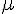

前言
編輯小語
從本期開始，「程式人雜誌」將會新增一個「程式與科學」的主題，採用科普 (科學普及化) 的角度介紹程式與科學之間的關係，以下是本期「程式與科學」的主題內容。
增加「程式與科學」這個主題是因為編輯將在網路上認識了「泛科學」的創辦人「鄭國威」，國威兄邀請我來為「泛科學」寫個專欄，於是我們討論的結果想說能夠寫些文章可以 在「程式人雜誌」與「泛科學」兩邊同時刊載，這樣就能讓更多人看到這些文章了。
也歡迎「程式人雜誌」的朋友們，投稿「程式與科學」這個專欄，以便讓更多非程式領域的朋友 也能瞭解程式領域的的科學主題，讓更多網友能夠加入「程式人」的行列。
---- （程式人雜誌編輯 - 陳鍾誠）
授權聲明
本雜誌採用 創作共用：姓名標示、相同方式分享 授權，若您想要修改本書產生衍生著作時，至少應該遵守下列授權條件：
- 標示原作者姓名
- 採用 創作共用：姓名標示、相同方式分享 的方式公開衍生著作。
另外、當本雜誌中有文章或素材並非採用 姓名標示、相同方式分享 時，將會在該文章或素材後面標示其授權，此時該文章將以該標示的方式授權釋出，請修改者注意這些授權標示，以避免產生侵權糾紛。
例如有些文章可能不希望被作為「商業性使用」，此時就可能會採用創作共用：姓名標示、非商業性、相同方式分享 的授權，此時您就不應當將該文章用於商業用途上。
最後、懇請勿移除公益捐贈的相關描述，以便讓愛心得以持續散播！
程式人短訊
程式短訊：PROLOG 語言與開發工具
說到了 LISP 就不能不談談 PROLOG，這兩個語言在人工智慧領域一直都具有非常重要的地位。 LISP 是以 λ 演算為基礎的函數式語言，而 PROLOG 則是以邏輯的 Horn Clause 推論為理論 根據的邏輯式語言。
PROLOG 最初被運用於自然語言等研究領域。現在它已廣泛的應用在人工智慧的研究中， 它經常被用來建造專家系統、自然語言理解、智慧知識庫等方面的程式。
Prolog 語言最早由 Aix-Marseille 大學的 Alain Colmerauer 與 Phillipe Roussel 等人於 60 年代末開始研究開發，並於 1972 年正式誕生。
Prolog一直在北美和歐洲被廣泛使用。日本政府曾經為了建造智慧電腦而用 Prolog 來開發 ICOT 第五代電腦系統。在早期的機器智慧研究領域，Prolog曾經是主要的開發工具。
80年代 Borland 開發的Turbo Prolog，進一步普及了 Prolog 的使用，1995年確定了ISO Prolog標準。
現在若您想使用 Prolog 的話，有很多種開發環境可供選擇，像是 BProlog，GNU Prolog, Quintus, SICStus, Strawberry、SWI-Prolog、YAP-Prolog 等等。
以 SWI-Prolog 為例，您可以從以下網站中下載此一開發環境：
以下是筆者下載並安裝 SWI-Prolog 的過程，有興趣的讀者可以參考看看：
- SWI Prolog 的下載與安裝過程 -- http://youtu.be/beIL207y7rI
以下是一個 prolog 的簡易程式，用來判斷某些人之間是否有「親-子」關係或「兄弟」關係的。
檔案：parent.pl
mother_child(trude, sally).
father_child(tom, sally).
father_child(tom, erica).
father_child(mike, tom).
sibling(X, Y) :- parent_child(Z, X), parent_child(Z, Y).
parent_child(X, Y) :- father_child(X, Y).
parent_child(X, Y) :- mother_child(X, Y).當您寫完上述程式之後，就可以存檔並執行，然後開始詢問某些邏輯問句，Prolog 系統將會回答您，例如：
?- sibling(sally, erica).
Yes如果您想要執行上述的 parent.pl 程式，然後開始詢問問題的話，可以先用任何編輯器，編好 parent.pl 的 內容並存檔，此時 parent.pl 這個檔案的圖示會是一隻貓頭鷹，您點選兩下後就會呼叫 SWI-Prolog 來執行它。 接著您就可以輸入問句了，以下是筆者的執行過程錄影。
- 在 SWI Prolog 中載入並執行程式 -- http://youtu.be/xzz2L30T03g
在筆者學習程式的漫長歷史當中，一直認為 PROLOG 是個相當奇特的語言，因為很少程式語言是從「邏輯推論」 這個角度切入的，這讓 PROLOG 成為用來撰寫知識型專家系統的首選語言，因為 PROLOG 天生就是邏輯推論高手阿！
最近在 程式人雜誌社團 中，網友「KuoE0」貼了一篇 prolog 入門 的文章，有機會我們將在後續的雜誌中 刊登這一系列的文章，請讀者拭目以待！
參考文獻
- 維基百科:Prolog -- https://zh.wikipedia.org/zh-tw/Prolog
- Wikipedia:Prolog -- https://en.wikipedia.org/wiki/Prolog
- prolog 入門-- http://kuoe0.ch/2288/prolog-tutorial/
【本文由陳鍾誠取材並修改自維基百科】
程式人介紹
LISP 的發明人 – John McCarthy
John McCarthy (約翰·麥卡錫)（1927年9月4日－2011年10月24日），生於美國麻薩諸塞州波士頓，計算機科學家。 他因在人工智慧領域的貢獻而在 1971 年獲得圖靈獎。實際上，正是他在 1955 年的達特矛斯會議上 提出了「人工智慧」這個概念。
John McCarthy 在 1960 年創造出了 LISP（全名LISt Processor，即列表處理語言）這個程式語言， 是一種有強烈數學基礎 (基於 λ演算) 的函數式語言。
LISP有很多種方言，各個實作中的語言不完全一樣。1980年代 Guy L. Steele 編寫了Common Lisp 試圖 進行標準化，這個標準被大多數直譯器和編譯器所接受。在Unix/Linux系統中，還有一種和 Emacs 一起的 Emacs Lisp（而Emacs正是用Lisp作為擴充功能語言進行功能擴充功能的）非常流行，並建立了自己的標準。
LISP語言的主要現代版本包括 Common Lisp 和 Scheme。
雖然 LISP 是個通用型的語言，但是最常被使用在人工智慧領域，以下是一個用 LISP 計算 n! (n 階層) 函數的程式範例：
(defun factorial (n)
(if (<= n 1)
1
(* n (factorial (- n 1)))))即便現在 LISP 的使用者並不像 Java, Python, Ruby 等語言那麼多，但仍然有許多人在使用，像是 http://lisp.tw/ 這個網站中就介紹了很多 LISP 相關的程式與資訊，
如果您現在想使用 LISP 的話，像是 Allegro Common Lisp、LispWorks、GNU Common Lisp 等，您可以自行選用 適合的開發環境，以便學習或使用 LISP 語言。
參考文獻
- 維基百科:約翰·麥卡錫
- Wikipedia:Lisp
- GCL - an implementation of Common Lisp
- http://lisp.tw/
- 維基教科書:Lisp 入門
- ANSI Common Lisp 中文翻譯版
【本文由陳鍾誠取材並修改自維基百科】
程式人頻道
Raffaello D'Andrea: 四軸飛行器驚人的運動能力
第一次看到網路上有人分享這個四軸直升機影片的時候，總覺得應該沒什麼好看的，因為這類的直升機有很多 現成在賣的，用 Arduino 也有人做出來，但是當第二次在度看到有人分享時，就覺得應該看一看了。
結果、一看進去就不得了，這個傢伙根本就是個神人，他們的直升機表演簡直就是 -- 魔術般的神級作品， 能夠將直升機控制到這種程度，背後必然有極具價值的數學演算法阿！
- Raffaello D'Andrea: 四軸飛行器驚人的運動能力
在影片中，您可以看到它們的直升機非常的穩定，而且、非常的聽話，甚至可以將一根長桿放在直升機上，它會 自動平衡而不會倒下來。
更神的是，當他拿起剪刀，將四個直升機翅膀剪壞兩個之後，竟然直升機還可以用旋轉的方式進行平衡，......
我很好奇這樣的直升機控制，到底是用甚麼演算法呢？所以我上網找到了 Raffaello D'Andrea 的網站，發現他 是瑞士理工學院 (Swiss Federal Institute of Technology) 的教授，主要教授動態系統與控制 (Dynamic Systems and Control) 方面的課程，而且是 Kiva Systems 這個公司的共同創辦人。以下是他的個人網站：
最近 Kiva System 還被亞馬遜給併購了 (recently acquired by Amazon)。疑、亞馬遜不好好賣書， 併購一家做控制系統的公司做甚麼呢？難道、亞馬遜想切入軍事工業，還是他的老闆貝佐斯想當鋼鐵人 ....
然後又找到了下列的影片，是他接受專訪時的對談：
- Raffaello D'Andrea ZURICH.MINDS INTERVIEW -- http://youtu.be/p_Wl-C-ORso
他們的作品不只是直升機而已，還包含打球機、自動平衡方塊、倉庫用的搬運機器人、 垮掉後會自我組裝回來的機器椅子、辦公室或家用的機器人等等，您可以從以下網址看到這些作品與影片：
可惜的是，我找不到他發表的論文，所以也就不知道哪個直升機的控制程式奧秘了，或許是因為他們不想寫論文， 因為知道這個東西有很高的價值，所以直接當作 Kiva System 公司的內部機密吧！
看完之後我只覺得，瑞士人果然不簡單阿！
參考文獻
- Raffaello D'Andrea | Dynamic Works -- http://raffaello.name/
- http://www.ted.com/talks/raffaello_d_andrea_the_astounding_athletic_power_of_quadcopters.html
【本文由陳鍾誠撰寫】
程式人討論區
程式語言討論 – 除了 C++ 以外的快速物件導向語言
2013 年 6 月 15 日，網友於 程式人雜誌社團 分享的一篇文章引發了討論
陳○○：：不知道有沒有人跟我一樣，很不喜歡 C++，但是又需要速度與 OO 當然 Java 跟 Python 都是我的愛， C 也很棒，但是缺了好的 OO (我曾試過用 C OO 化，但相對的，看起來變複雜了）
因此我最近也在搜尋，有沒有編譯出來比較快的語言，阿我的平台都是在 linux 所以我看到了 Vala 感覺上還不錯， 當然也在看 Go 跟 Obtivec-C 不知道有沒有人想分享一下這些語言的特色呀？當然我還是希望 linux 支援度優先的語言 ^^ (我是不太喜歡 Go 宣告的 type 是擺在後面啦）https://live.gnome.org/Vala/
雖然這個問題感覺有點困難，社團的朋友們還是提出了很多的可能，如下回應所示：
- 徐○○： Linux 支援度？那Objective-C你還是跳過好了
- 鄭○○： Java 不適合你用嗎?
- 陳○○： 喔 Java 呀，很適合呀，但有時候又想要一個編譯成機器碼的語言
- 陳○○： 感覺 Vala 還蠻適合我的理想，因為我實在恨透了 C++ 中，一個 class 分成指標要 new 然後非指標不用 new 一下子是 A->a 這樣抓東西出來 一下子 A.a ，這真的是為了相容 C ，而變形的東西
- T○○： 可是其實c++的programming style中這不太會混用的
- 鄭○○： 不太覺得這個例子裡，C++ 有什麼不好耶......
- S○○： 可以試試看gcj
- 鄭○○： 應該說，需要手動記憶體管理的都會有這種 syntax......
- 鄭○○： 還是用 (*pA).x 就會和 A.x 一致呢?
- 陳○○： 可能是我有被 python 的哲學小小影響，同樣的事情，只有一種方法作到
- J○○： C++你可能需要去看一下一些人的程式碼，學習他們怎麼管理跟編程習慣，有些命名原則跟習慣可以讓你減少很多麻煩，還有事前的規劃也很重要，只要知道物件之間的相依關係如何，就連繼承也不太會搞混，甚至於整個專案的效能都會提高很多。不過我C++幾乎忘光光了，以前是有研究過std的vector動態陣列的類神經網路程式碼，那時候套用了一些別人的設計模式，效能比我原先寫的還要高3倍。
- 鄭○○： Python 這種不需要自己管記憶體的語言，吃那麼好，語法當然不用分啊。
- 陳○○： 這個嘛～我當然知道要去看人家的 coding standard 啦，喔！還有記憶體管理問題，語法跟記憶體管理應該可以分兩邊來看的說，要作到記憶體管理，語法也是可以設計的。
- 陳○○： 還有一件事 像是 constructor，變數初始化可以放在 xxx() : a(0), b(0) {} 但是也有人喜歡 xxx() {a = 0; b = 0;} 總覺得這是同樣的事情，如果真的說這樣效能有差，也可以統一只用一個語法，然後實現的時候用效能最好的那個
- 陳○○： S○○： gcj 似乎出到 1.5 就沒動靜了
- T○○： list並不等價於寫在constructor中喔
- 鄭○○： 這完全不一樣啊。前者是用 a, b 的 constructors，後者是讓 a, b create 出來之後再 assign 值。用法不同。
- 陳○○： 所以這就是我說的，如果效率上有差，或是動作有差，但既然都叫做 constructor 了，應該可以分辨出語法，抓出 constructor 來做同樣的事情
- 鄭○○： 不對，後者不是 constructor，只是單純的給值而己。
- T○○： 問題是這種不確定的行為在許多狀態是無法接受的 特別是記憶體受限的時候，暫存的物件多生一個少生一個都差很多
- 鄭○○： C++ 不幫你做太多事情。事實上已經很多人抱怨它做很多事情了。
- 鄭○○： C++ 讓你對物件生成，記憶體配置有很高的控制權。你可以很清楚知道物件是用什麼方法配置與初始的。其代價就是寫錯要自己負責。
- T○○： 為了把記憶體管理的複雜hide起來,java和C#(.net),python都作了很多很辛苦的事情的...
- T○○： 而GC是非常昂貴的成本 在許多狀況下無法忍受
- 陳○○： 我知道那是 assign 啦，這不是批鬥我 c++ 用不深或怎麼樣的，我是在探討優美的程度，java 之所以出現，不也是抓出他們認為 C++ 令人詬病的地方，然後縮減嗎？如果要什麼都管的話，我會用 C， 但我現在希望探討的是語法的美感，而不是實際受限的問題，畢竟 C++ 多了一個 OO，但這很需要美感呀
- 鄭○○： 在這邊舉的例子，說實在都不是 C++ 語言的缺點。
- T○○： c++設計上就是為了讓施工的人可以作自己的鑽頭啊...
- 鄭○○： C++ 的美感是靠 programmer 用 coding style, convention 來維護的。
- T○○： 我想你不會想用C實現COM之類的東西的.....
- 鄭○○： 要說美感問題，我覺得 C++ 的 enum hacking 才是比較不美的例子。
- 陳○○： OK！不過這都不是我想探討的方向啦，不然 Go 也不會出現
- 陳○○： 像 python 就根本不太需要 conding standard 就能讓人很舒服, 所以我在找，有沒有方向是跟 C++ 差不多，讀起來舒服的語言。
- 鄭○○： Go 有 GC 啊......
- 陳○○： 好吧，我的錯，先不要糾結在 GC 上, 我相信不 GC 也能有美感的, 像我現在找的 Vala 他也有 destructor
- 鄭○○： 好吧，我以前有用過一陣子 pascal
- T○○： 使用者就要負責把最髒的東西處理好啊...可以參考webkit底層自己實現的跨平台的smartpointer
- 陳○○： 我也蠻喜歡 pascal 的，, 不過 begin, end 到時候多起來可真的就不好看了, 不然真的很美
- T○○： delphi的object pascal?
- 陳○○： 我是用 fpc
- 鄭○○： 然後我不知道 Obj-C 在 Linux 上表現怎麼樣。
- 鄭○○： Free Pascal http://www.freepascal.org/
- 陳○○： 因為單純看 Vala 真的很像 C++ 的語法（他出現的目的就是不想用 C++，然後最後會轉成 C 然後套上 GObjC，但是重點是他的語法) 所以想提出來探討看看，https://live.gnome.org/Vala/Tutorial 。 鄭○○： Objective-C on Linux http://stackoverflow.com/questions/7133728/objective-c-in-linux
- 陳○○： 然後目前我在看，都還沒看到我剛剛講的，我不喜歡的那些, 看來他們是真的也不喜歡我講的那幾段語法
- T○○： 老實說這繞來繞去最後都一個樣耶XD 這不是C#嗎,
- 陳○○： 我其實更希望的是更像 java ，我偏向砍功能, 只是 gcj 還在 1.5, 還有希望不是靠 vm 跑.
- T○○： java正在往c#靠啊...
- 陳○○： 有同感，我希望能夠有個語言擁有 java 的初衷
- 鄭○○： :Although Vala manages the memory for you, you might need to add your own destructor if you choose to do manual memory management with pointers (more on that later) or if you have to release other resources. "
- 鄭○○： 因為有 gc 才不用管 mem 嘛。
- T○○： 我不覺的那有甚麼不好啊...我個人非常喜歡C#
- T○○： 雖然只是reference counting, 應該是smartpointer
- T○○： 喔 他是用gnu oc runtime當sandbox啦
- 林○○： 把 jvm 當 lib 看待就好
- T○○： jvm不是lib 是sandbox
- 鄭○○： 我是說，你不喜歡的語法，正是因為沒有 GC 才不得不存在的。你拿有 GC 的語言出來，當然不需要這些語法。
- 陳○○： 好吧 ，又跳回原點了，看來 pascal 似乎才符合可能是我想要的
- 鄭○○： Pascal library 很少喔......
- 陳○○： 我也沒打算用他啦，只是想問有沒有用過較多語言的大大, 有沒有不用 vm 又有 oo 語法優美，有 GC 可的語言 意者私訊 ㄏㄏ～
- T○○： 我說...就算pascal還是有.還有^.的差別啊
- T○○： 除非你 pass object 通通不用 pointer
- 陳○○： 嗯，我就是因為 ^ 一下子在前一下子在後, 還有 begin, end 海，所以才沒打算
- T○○： 有gc就是下面有sandbox啊...不然誰幫你gc呢
- T○○： 只是那個sandbox怎麼存在就是了
- 鄭○○： LiveScript + node.js ?
- 陳○○： OK 我這幾天去看看
- 鄭○○： C# ? http://www.mono-project.com/Main_Page
- 陳○○： mono 有在用
- T○○： 說真的已"需要compile成bytecode" C#吧
- 鄭○○： Ruby ?
- 鄭○○： Scala ?
- T○○： python....
- 陳○○： 我想找的不是到 VM 那麼大顆，或者是 interpreter
- 陳○○： 這樣的話 ，我本來就很愛 python, java了, vala 剛剛看了，他並沒有說用到整顆 VM, 應該頂多是 GC 在背景跑
- 鄭○○： Lua ?
- T○○： lua本身甚麼都沒有啊...XD
- 陳○○： 這些應該都還算是 interpreter 去跑的 script
- T○○： 那只有C#了
- 陳○○： 好吧 感謝各位，有點晚了，驚擾到各位了，謝謝大家陪我尋找
- 鄭○○： 把這些語言想一遍還蠻有意思的。
- 盧○○： GCJ 根本要作古了吧.....http://gcc.gnu.org/ml/java/2013-01/msg00001.html
- 盧○○： 上面提的幾個Scripting Lang備後幾乎都有interpreter在跑吧 = =", 用C#背後也是.net Framework架在CLI上跑，free lunch is over~
- 陳○○： 所以我才說沒有要採用 VM 但可以接受 GC, 所以目前都沒看到其他合適的語言，目前還是 Vala 和 Go
- Unri Gooper 之前曾經想過有沒有能編譯成native machine code、同時又有優美的OOP語法、大量好用的standard lib的程式語言（或許這是原PO原文的重點）, 不過把這個問題拿去問大學教授，得到的答案是： 只有聽過三種能編譯出native code的語言，C、C++、（更正）Fortran
- 不知道在這些老牌語言發展這麼多年之後，有沒有能編譯成native code的「新生」語言
- 陳○○： 沒錯，我就有跟大大一樣的想法, 所以這些語言才生出來，只是前面幾位大大認為 GC 這點似乎就無法像 C++ 一樣了, 但小弟我認為這是可以接受的東西，我只是要個 native 的語言, 然後消除不好看的語法
- E○○： 繼續使用C語言中......XD
- 鮑○○： http://www.mono-project.com/Mono_LLVM
- 傅○○： 用Vala來寫GLib-based的程式很方便，內建GObject，D-Bus，Async method 等，同時又引入一些額外的feature，如Closure。然後，澄清一下，Vala並沒有GC的機制，它是用GObject裡的reference counter來管理物件﹙也可以不用，自己管理﹚，章節4.3。在Vala/Tutorial裡有章節﹙9, 10﹚在介紹Weak reference和Ownership的觀念，還有一篇文章特別來介紹Vala/ReferenceHandling。我個人也是覺得C++做太多事了，所以，比較喜歡C，一切掌握在自己手裡。但，想一想其實C也有一樣的問題，只是比C++少。Python是一個生產力很高的PL，但，不代表不需要coding standard。不管什麼PL都要，不然，多人合作開發會有很痛苦的經驗。用了幾個programming language﹙以下簡稱PL﹚後，認為美感來源不是PL，PL只是讓工程師用不同的思維來思考問題的方法。美感的來源是日後檢視原始碼時的公眾評價，以及工程師主觀的認定。最後，不管是C/C++，Java，Scala，Python，Ruby，Google Go，Java Script，PL好不好用，取決於用它的人，能不能接受PL背後的哲學，以及善用它built-in features。
- Y○○： 我個人也不喜歡C++...都只用C或是Java
- 黃○○： 如果是你自己創造新語言，難保你不會步入c++的後塵。
- T○○： 其實昨天就說了 那些"不好看"的語法能不見就是因為有人幫忙把骯髒事情作掉了, 如果你需要控制這些東西 那就沒有好不好看的問題
- T○○： 我有看到 所以我才說vala用的是smart pointer
- T○○： 更嚴格來說 那其實就是java/c#等等使用的機制, 只是沒有一個bytecode層次的東西幫你再抽像化一次記憶體管理
- 吳○○： Scheme.......XD
- S○○： 其實你一開始談到的需求是"速度"與"OO"，談到速度其實就是你在意程式的效能不是嗎？既然牽扯效能那麼你應該看的不只是語言本身，當然C/C++甚至是組合語言是目前執行速度最快的，但是你的執行硬體等級、作業系統調較、若有VM那麼VM本身的調較、系統程式的寫法(有沒用多執行緒寫法來加速)與架構，這四個面向是否有全面的兼顧到呢？千萬別只是單方面認為程式語言本身就是效能的保證，因為程式員本身的能力還是效能的最大因素，畢竟程式是人寫出來的。以上是個人小小的看法！
- 林○○： bytecode層次的記憶體管理不曉得要管理到什麼層次, 如果要像 C 的變數存放, 呼叫DLL用的JNA其實就能做到(當然效能是代價), 但如果要管到function handle, c#有delegate, 而 JAVA 則必須要用 interface 包起來變成物件
- 陳○○： 我的速度，大概就是指，可以用 native 的速度來執行，用 VM 去跑，速度下滑很多。我不是要求到兩種 native 在比速度，native 跟 native 比，應該是不會有 native 跟 vm 差得多
- 陳○○： 還有我不希望又跳到硬體層面去思考，或許各位用太久的 C++，語法層次已經被 C++, 限制了，要作到同樣的事情，理應也能有很棒的語法。
- 鄧○○： 就是習慣而已，C派跟J派已經吵很久了。C++卡在一個很尷尬的位置上。C++已經不能單從C++去看了，要連同STD，Boost，以及他的下游函式庫一起比較。這樣與其他後起之秀比起來才客觀。單看C++就只能看到二十到三十年前訂下來的規範。當然會覺得他落伍，只是我們是從二十到三十年後的角度去看。C 1972出世, C++ 1983出世, Java是1995出世.
- T○○： c++11早就普及了吧
- 鄭○○： C++11 還沒"那麼"普及。
- 陳○○： 至少 g++ 還沒預設
- 鄭○○： 其實我最喜歡 Perl
- 陳○○： 說到 Perl ，問一下 Perl 6 會上去主線嗎？還是打算一直當作不同的分支下去？？
- 鄧○○： 去仔細看C++11多出來的那些語法.事實上沒那麼多人知道,會用,真的實用.
- 鄭○○： Perl 6 和 Perl 5 相當不同，但 Perl 5 已經從 Perl 6 得到不少東西。我相它們會一直不同下去。
- 鄭○○： 我知道最完整的 Perl 6 impl 是這個。 http://rakudo.org/
- 陳○○： 原來還是會不同下去呀，聽說 perl6 的語法跟 ruby 很像，雖然我是還沒研究過啦，害我有點興趣了，不過這根本篇主旨無關
- 盧○○： C11也多了很多「未普及」的語法(__generic這個例子最特別) 至於compiler flag,真要說的話，〝 The default, if no C language dialect options are given, is -std=gnu90 〞 FYI:gcc.gnu.org/onlinedocs/gcc/Standards.html 你沒告訴它足夠的資訊，它怎知要開哪個std？
- 吳○○： Larry 還是唐鳳曾經說過「Ruby 就是 OO 版的 Perl5」Perl6 會引入一些 FPL 的特性，所以使用上，只是語法像 Perl5，概念上則會不同
- W○○： 如果要有 C++ 的 performance (no VM)，又能夠有好很多的語言設計，我想到的是 OCaml。這是 ML-family 的語言，也影響到 F# 的設計。
- 至於 GHC 版的 Haskell 應該也是可以變得很 performant，但是我以前玩的經驗是 compiler 好像很慢 (對 lazy language 的 optimization 應該不易)。
- W○○： 我倒是比較喜歡type放後面, 那是另一種思考方式, 如果能推論型別的話, 不寫type更好.
- W○○： 如果會寫.net語言的話, c++11應該也很好入門, 很多特性都是一樣的.
- 盧○○： Wei-Ting Cho: 詳細希望
- W○○： 自己看 cheat sheet 啊！網路上不是有很多了.... http://isocpp.org/blog/2012/12/c11-a-cheat-sheet-alex-sinyakov 每次想到c++有async&get, 就覺得c++突然追上c#上, 還遠遠超過java...
- W○○： 其實就是這樣啊 XDD 我真的沒想要花時間說明什麼, 我也覺得想要知道什麼自己查就行了. 如果熟.net的人, 應該一看完cheat sheet後就能了解我說的, 當然我不是單指C++/CLI, 如果以C#來看也一樣. 像是std裡的新東西不就跟.net裡的一模一樣? 其他很多特性也都差不多.
- 陳鍾誠 推 Node.js
- 廖○○： 如果你3D引擎有興趣的話，可以把RenderWare拿來研究看看，他的程式碼就是C Base，沒有Class的包裝，但因為使用者大都為C++ Base，所以他就用C來模擬出C++物件導向的程式碼。
- P○○：推 LISP. 可以 compile 成 native code, 也有 OO. 6月16日 15:25來自手機 · 讚
- N○○： 的 D 語言，就是想要 C++ 的 native 優勢、又討厭 C++ 某些語言特性的人設計出來的。據我所知 Andrei Alexandrescu 也花了一些時間在上面。它也有自己的新問題，投入的人好像也很有限，我個人大概還是傾向於 C++11 吧。
- 陳○○： 其實剛剛看了一下 Novus Chou 兄說的 D 語言，之前就有聽聞，原來真的就是想改造 C++ ，只是 wiki 上面關於他的問題似乎真的蠻多的，說真的，這個 D 語言似乎真的聽到我的問題了。
我自己也常常覺得某些語言用得不夠順手，這幾乎是程式人都會碰到的一個問題，因此我從 Pascal, C, C++, Java, C#, R, JavaScript, Verilog 一路學過來， 發現其實各個語言都有其特色與好處。
即便在這個網路發達的時代，要找一個完全符合自己要求的語言仍然是不容易的，或許我們只能適應「程式環境」的現況，從現有語言當中挑一個順手的語言，然後在 必需要講求速度時，再用像 C/C++ 等語言來加速了！
【本文由陳鍾誠編採自 程式人雜誌社團 的討論訊息】
程式與科學
以程式人的想法為「油價公式」除錯
引言
近來、每當中油油價要調漲時，很多新聞都會報導或批評，例如我們常常會聽到以下說法：
「甚麼都漲、就是薪水不漲」
等等的抱怨。
但是、您瞭解中油油價調漲的基準與方式是甚麼嗎？其中是否藏有某些您不知道的秘密呢？
在本文中，我們將透過「程式人的專業角度」，為您解讀油價公式內所隱藏的秘密！
但是在此之前，先讓我們介紹一下這個祕密背後所需要的「數學背景」。
遞歸關係
在「資訊類科系」(Computer Science) 的課程當中，「離散數學」(Discrete Mathematics) 是一們重要的數學課， 其中有個「遞歸關係式」 (Recurrence Equation) 的數學函數，可以用來計算程式 (或演算法) 的執行效能， 但是在本文中，我們將改用「遞歸關係」來為「中油的油價公式」進行除錯，證明「中油的油價公式會造成幾何暴漲」。
首先讓我們來看看甚麼是「遞歸關係」，先從一個比較簡單的例子開始：
問題 1. 假如有隻母雞，從成年開始他每天下一個蛋，那麼在成年後第 n 天他總共下了幾個蛋呢？
解答：關於這個問題，答案非常簡單，很多人一看就知道是 n 個蛋了。
但是讓我們姑且用遞歸關係來寫出這個問題的數學式：
T(n) = T(n-1) + 1
T(1) = 1為了求解這樣的算式，我們可以將 n 代入 1, 2, 3, ....，然後列表如下：
T(1) = 1
T(2) = T(1) + 1
T(3) = T(2) + 1
T(4) = T(3) + 1
.....
T(n) = T(n-1) + 1於是、您可以透過由上而下的計算方式，算出這個「遞歸關係」的解答，如下所示：
T(2) = T(1) + 1 = 1 + 1 = 2
T(3) = T(2) + 1 = 2 + 1 = 3
T(4) = T(3) + 1 = 3 + 1 = 4
....很直覺的，您應該會猜測 T(n) 的解答就是 n，這個猜測是沒錯的！
上述遞歸關係的解答 T(n) 是個線性函數，也就是國中課程當中所說的「算術級數」。
接著、讓我們再來看看一種會造成「幾何級數」的遞歸關係，同樣的，讓我們先看看下列問題：
問題 2. 假如培養皿中有隻細菌、該細菌每分鐘分裂一次，請問在第 n 分鐘的時候，共有幾隻細菌？
解答：我們可以將這個問題寫成以下的遞歸關係：
T(n) = 2 * T(n-1)
T(0) = 1於是我們可以列出前幾項的結果如下：
T(0) = 1
T(1) = 2*T(0) = 2 * 1 = 2
T(2) = 2*T(1) = 2 * 2 = 4
T(3) = 2*T(2) = 2 * 4 = 8
....
如果您觀察一下上述列表，可能會猜測 ，這個猜測也是對的，這類的函數稱為幾何級數。
著名的社會學家「馬爾薩斯」就在其名著「人口論」當中，提出了一個「廣為人知」的論點，其推論如下：
糧食的增長函數是算術級數，而人口的增長函數是幾何幾數，幾何級數後期的增長會遠超過算術級數， 因此糧食最後必然會不足，於是「饑荒、戰爭與大規模的疾病」將會是不可避免的結果。
另外、電腦在表示數字的時候，由於採用固定位元數的方式，因此都會有一些誤差，特別是像  這類的 無理數，更是無法用電腦精確表示，這些誤差如果經過某些遞歸關係放大之後，很可能會造成「差之毫釐、 失之千里」的結果。這類誤差放大的研究，甚至導致了學術上「混沌理論」的重要進展！
這類的 無理數，更是無法用電腦精確表示，這些誤差如果經過某些遞歸關係放大之後，很可能會造成「差之毫釐、 失之千里」的結果。這類誤差放大的研究，甚至導致了學術上「混沌理論」的重要進展！
中油的油價調漲公式
那麼、這些結果與中油的油價公式有何關係呢？讓我們來看看中油的油價，是如何調整的，在中油的 國內汽、柴油浮動油價調整機制作業原則 這份 PDF 文件當中，有一段令人難以解讀的中文如下：
- 一、 調價指標：Platts報導之 Dubai 及 Brent均價，分別以70 %及30%權重計算(70 % Dubai +30% Brent)，取小數二位，採四捨五入。
- 二、 調價幅度：每週(週一至週五)調價幅度取「調價指標當週均價乘以當週匯率均價與調價指標前週均價乘以前週匯率均價比較」之80%變動幅度計算，取小數二位，採四捨五入。
- 三、 調價金額：(一)依「92 無鉛汽油及高級柴油還原依機制計算應調整價格之稅前批售價格」乘以「調價幅度」，分別計算 92無鉛汽油及高級柴油稅前批售價格，再加上稅費換算 零售價(取小數一位，採四捨五入)，據以計算調價金額。
由於這段話實在令人難懂，所以讓我們稍為進行一下數學定義，以數學的方式解讀這段「自然語言」，解讀前首先讓我們定義幾個變數：
- P = 本期價格 = P(t)
- P' = 上期價格 = P(t-1)
- C = 本期國際均價 = C(t)
- C' = 上期國際均價 = C(t-1)
以上的的國際均價 C 即為第一項所稱之調價指標。根據上述定義，則調價幅度的數學式解讀如下：
(P-P')/P' = (C -C')/C' * 0.8
也就是
調價幅度 = (本期價格 P - 上期價格 P')/上期價格 P' = (當期調價指標 C - 前期調價指標 C')/前期調價指標 C' * 80%
將上述數學式移項調整一下，可得下列數學式：
P = P' + P' * (C-C')/C' * 0.8
假如那段「令人難以解讀的中文」之數學式真的如以上所解讀的，那麼我們就可以透過電腦計算油價，並且可以進行模擬。
以程式模擬漲跌過程
於是我寫了一個簡單的 C 語言程式以變模擬整個油價的調整過程，在程式中我們讓油價以正弦函數 2 + sin(i) 的方式震盪， 這個正弦函數是一個必然介於 1 到 3 之間的函數。但是、模擬的結果肯定會讓人嚇一大跳：
#include <stdio.h>
#include <math.h>
double gen(int n) {
double p=1.0, p1=1.0, c=1.0, c1=1.0;
int t;
for (t=1; t<=n; t++) {
c = 2.0+sin(t);
p = ((c-c1)/c1)*0.8*p1 + p1;
printf("t=%d : c=%6.2f p=%6.2f\n", t, c, p);
c1 = c;
p1 = p;
}
}
int main() {
gen(1000);
}雖然在模擬過程當中，國際油價始終在 1 元到 3 元之間震盪，但是經過了很多期之後，整個國內油價還是暴漲， 從最初 2.47 元 (比國際油價 2.84 元還低)，到 500 期時上漲到 397.04 元 (此時國際油價為 1.53 元)，然後 到了 1000 期時更暴漲到 174551.80 元 (十七萬四千多元，此時國際油價為 2.83 元)。
執行方法與指令
D:\Dropbox\Public\pmag\201307\code>gcc oil.c -o oil
D:\Dropbox\Public\pmag\201307\code>oil > oil.lst執行結果摘錄
t=1 : c= 2.84 p= 2.47
t=2 : c= 2.91 p= 2.52
t=3 : c= 2.14 p= 1.99
t=4 : c= 1.24 p= 1.32
t=5 : c= 1.04 p= 1.15
t=6 : c= 1.72 p= 1.75
t=7 : c= 2.66 p= 2.51
t=8 : c= 2.99 p= 2.76
t=9 : c= 2.41 p= 2.34
t=10 : c= 1.46 p= 1.59
...
t=500 : c= 1.53 p=397.04
t=501 : c= 1.00 p=287.44
t=502 : c= 1.39 p=376.22
t=503 : c= 2.34 p=581.21
t=504 : c= 2.97 p=707.73
t=505 : c= 2.71 p=658.28
t=506 : c= 1.80 p=480.40
t=507 : c= 1.07 p=324.10
t=508 : c= 1.19 p=354.96
t=509 : c= 2.06 p=561.54
t=510 : c= 2.87 p=738.31
...
t=990 : c= 1.61 p=98834.43
t=991 : c= 1.01 p=69539.87
t=992 : c= 1.32 p=86448.98
t=993 : c= 2.25 p=135085.66
t=994 : c= 2.95 p=168513.04
t=995 : c= 2.77 p=160415.99
t=996 : c= 1.89 p=119299.47
t=997 : c= 1.10 p=79653.27
t=998 : c= 1.14 p=82110.42
t=999 : c= 1.97 p=129690.29
t=1000 : c= 2.83 p=174551.80油價公式的問題
這個模擬過程告訴我們，中油的油價調整公式的設計，會有某種誤差放大效果，而且這種放大效果 並非上下一致的，而是向上放大的情況較嚴重，這與達爾文進化論中的「適者生存、而且會產生更多後代」 有點類似，都是一種隨機性的幾何上漲的過程，因此才會造成後期的暴漲。
這個現象並非我所發現的，而是我在 MR. OTTER 在「歐特先生本性難移」網誌的 中油油價公式，創造永遠跌不回去的油價 一文中所看到的， 我只是將該文用程式人的方式重新解讀一遍而已！
透過這個油價的範例，相信您應該可以看到「遞歸運算式」千變萬化的一面，在設計制度時也會更小心一些， 以免不小心落入幾何暴漲的陷阱，造成毀滅性的災難啊！
疑問與解決辦法
在上述的油價調整公式之設計中，調價幅度以 80% 計算，似乎是為了讓油價不要太快上漲或下跌，以免衝擊太大，但事實上這個方式反而是 造成油價暴漲的元凶，如果將調價幅度改以 100% 計算，反而不容易有暴漲的問題。
為甚麼呢？讓我們舉一個簡單的例子，假設有某次波動，漲跌各一次，先漲了 100% 再跌了 50%，這時價格應該是 200% * 50% = 2 * 0.5 = 1， 也就是價格會回到原點，但是如果我們將調價幅度以 80% 計算，那麼就會變成 1.8 * 0.6 = 1.08，並沒有回到原價，而是漲了 8%，所以 這個看來是好意的 80% 調價幅度，其實隱藏了爆漲的種子，一但經過很多輪的漲跌之後，就可能造成國際價格不變，但國內價格卻漲翻天的情況。
不過如果國際油價是一路慢慢上漲或下跌，而沒有震盪情況的話，那麼中油油價只會一路慢慢跟隨，而不會有漲翻天的情況！
但是、這個公式每週都至少用一次，那從開始實施浮動油價之後，應該也有幾百次的調整了，那麼為何一直沒有發現暴漲現象呢？ 這個問題根據我的猜測，很可能是因為 國內汽、柴油浮動油價調整機制作業原則 這份 PDF 文件的後半部，還有一條重要的規定如下：
- 七、各週調整後 92無鉛汽油、高級柴油零售價換算稅前批售價格，以亞鄰競爭國(日本、韓國、香港、新加坡)當週稅前價之最低價做為浮動油價調整的上限。
由於被這個第七條壓住了，所以油價並沒有暴漲，但是這樣的做法顯然很沒道理，先設計一個有問題會暴漲的公式，然後再 用一個額外的規定壓住它，這真的是非常奇怪不合理的想法！
事實上，採用「遞歸數學式」有時很難控制得很好，如果真的要只是要緩和上漲與下跌的幅度，那不如採用「移動平均線」的方式，例如根據 前 5 期國際油價平均值，加上一定比例的利潤率 (例如 5%) 做為油價，就不會有這種幾何暴漲的現象了。
如果用數學表示這種鎖定國際油價移動平均線的方法，可以用下列「沒有遞歸」的數學式表示：
P(t) = 1.05 * [C(t-1)+C(t-2)+C(t-3)+C(t-4)+C(t-5)] / 5
由於上述算式的右端沒有 P(t-1) 之類的函數存在，而且 C(t-i) 的計算也與國內油價 P(t) 無關，如此就不會因為「回饋效應」而造成幾何暴漲了！
當然，假如我們對上述 國內汽、柴油浮動油價調整機制作業原則 的「中文」理解錯誤的話，那本文的推論就可能是錯誤的。因此我們希望中油 與相關單位能夠澄清一下，最好能將該文的「遞歸數學式」寫出來，讓大家都能看得更清楚明白啊！
參考文獻
- 中油油價公式，創造永遠跌不回去的油價, 2013 年 01 月 10 日 BY MR. OTTER
- 歐特先生本性難移 網誌
- 國內汽、柴油浮動油價調整機制作業原則, (PDF) 99.01.06 修正實施
- 中油網站：首頁 / 油品價目 / 浮動油價調整機制
- 消基會質疑 浮動油價公式有瑕疵 , 【聯合報╱記者許俊偉／台北報導】
程式人文集
Arduino入門教學(7) – 使用七段顯示器製作倒數功能 (作者：Cooper Maa)
實驗目的
控制一顆七段顯示器，在七段顯示器上依序顯示從 9 到 0 的數字，製作數字倒數的效果。
七段顯示器簡介
七段顯示器是用來顯示數字的常用電子元件，在很多地方都可以看到它的身影，例如電子時鐘、溫度顯示器和各種儀表。它外型如下圖，背面一共有10 支接腳：

七段顯示器元件
- 圖片來源: 露天拍賣 -- http://goods.ruten.com.tw/item/show?21011217374852
七段顯示器分成共陽極和共陰極兩種，不管是哪一種，內部構造都是由 8 個 LED 發光二極體所組成，其中七個是筆劃，另外一個是小數點，如下圖所示，依順時針方向分別為 a, b, c, d, e, f, g 以及小數點 dp (decimal point):

要產生數字，方法是點亮指定的 LED。例如要產生數字 0，便點亮 a, b, c, d, e, f 等節段；要產生數字 1，便點亮 b, c 等節段；要產生數字 2，便點亮 a, b, d, e, g 等節段，依此類推。以共陰極而言，0 到 9 這十個阿拉伯數字與各節段的對應表如下：
| 顯示數字 | dp | a | b | c | d | e | f | g |
|---|---|---|---|---|---|---|---|---|
| 0 | 0 | 1 | 1 | 1 | 1 | 1 | 1 | 0 |
| 1 | 0 | 0 | 1 | 1 | 0 | 0 | 0 | 0 |
| 2 | 0 | 1 | 1 | 0 | 1 | 1 | 0 | 1 |
| 3 | 0 | 1 | 1 | 1 | 1 | 0 | 0 | 1 |
| 4 | 0 | 0 | 1 | 1 | 0 | 0 | 1 | 1 |
| 5 | 0 | 1 | 0 | 1 | 1 | 0 | 1 | 1 |
| 6 | 0 | 1 | 0 | 1 | 1 | 1 | 1 | 1 |
| 7 | 0 | 1 | 1 | 1 | 0 | 0 | 0 | 0 |
| 8 | 0 | 1 | 1 | 1 | 1 | 1 | 1 | 1 |
| 9 | 0 | 1 | 1 | 1 | 1 | 0 | 1 | 1 |
如果使用的是共陽極的七段顯示器，上面表格中所有的 1 都要換成 0， 所有的 0 都要換成 1。8 個 LED 連接到背面的接腳，我們為背面 10 接腳作個編號比較好記憶，a, b, c, d, e, f, g, dp 與 10 支接腳的關係圖如下:

圖片來源：.NET Micro Framework – More blinking LEDs
上圖是共陰極型的七段顯示器，3, 8 接腳要接到 GND，如果是共陽極則 3, 8 接腳要接到 +5V。
材料
- 麵包板 x 1
- Arduino 主板 x 1
- 七段顯示器(共陽極或共陰極皆可) x 1
- 220 ohm 電阻 x 8
- 單心線 x N
- 接線
將七段顯示器 3, 8 腳接到 GND (本例使用共陰極，若為共陽極請將 3, 8 腳接到 +5V) 查表將 Arduino 2, 3, 4, 5, 6, 7, 8 接到七段顯示器對應的腳位，並在每支接腳上串接一顆 220 ohm 電阻

下表為 Arduino 與七段顯示器的腳位對應表：
| Arduino 腳位 | 七段示顯器腳位 (筆劃) |
|---|---|
| 2 | 7 (A) |
| 3 | 6 (B) |
| 4 | 4 (C) |
| 5 | 2 (D) |
| 6 | 1 (E) |
| 7 | 9 (F) |
| 8 | 10 (G) |
| 9 | 5 (DP) |
電路圖
程式碼
版本一: 程式比較長，但比較容易懂(_7Segment.pde)
// 七段顯示器製作倒數功能 (v1)
void setup() {
pinMode(2, OUTPUT);
pinMode(3, OUTPUT);
pinMode(4, OUTPUT);
pinMode(5, OUTPUT);
pinMode(6, OUTPUT);
pinMode(7, OUTPUT);
pinMode(8, OUTPUT);
pinMode(9, OUTPUT);
digitalWrite(9, 0); // 關閉小數點
}
void loop() {
// 顯示數字 '9'
digitalWrite(2, 1);
digitalWrite(3, 1);
digitalWrite(4, 1);
digitalWrite(5, 0);
digitalWrite(6, 0);
digitalWrite(7, 1);
digitalWrite(8, 1);
delay(1000);
// 顯示數字 '8'
digitalWrite(2, 1);
digitalWrite(3, 1);
digitalWrite(4, 1);
digitalWrite(5, 1);
digitalWrite(6, 1);
digitalWrite(7, 1);
digitalWrite(8, 1);
delay(1000);
// 顯示數字 '7'
digitalWrite(2, 1);
digitalWrite(3, 1);
digitalWrite(4, 1);
digitalWrite(5, 0);
digitalWrite(6, 0);
digitalWrite(7, 0);
digitalWrite(8, 0);
delay(1000);
// 顯示數字 '6'
digitalWrite(2, 1);
digitalWrite(3, 0);
digitalWrite(4, 1);
digitalWrite(5, 1);
digitalWrite(6, 1);
digitalWrite(7, 1);
digitalWrite(8, 1);
delay(1000);
// 顯示數字 '5'
digitalWrite(2, 1);
digitalWrite(3, 0);
digitalWrite(4, 1);
digitalWrite(5, 1);
digitalWrite(6, 0);
digitalWrite(7, 1);
digitalWrite(8, 1);
delay(1000);
// 顯示數字 '4'
digitalWrite(2, 0);
digitalWrite(3, 1);
digitalWrite(4, 1);
digitalWrite(5, 0);
digitalWrite(6, 0);
digitalWrite(7, 1);
digitalWrite(8, 1);
delay(1000);
// 顯示數字 '3'
digitalWrite(2, 1);
digitalWrite(3, 1);
digitalWrite(4, 1);
digitalWrite(5, 1);
digitalWrite(6, 0);
digitalWrite(7, 0);
digitalWrite(8, 1);
delay(1000);
// 顯示數字 '2'
digitalWrite(2, 1);
digitalWrite(3, 1);
digitalWrite(4, 0);
digitalWrite(5, 1);
digitalWrite(6, 1);
digitalWrite(7, 0);
digitalWrite(8, 1);
delay(1000);
// 顯示數字 '1'
digitalWrite(2, 0);
digitalWrite(3, 1);
digitalWrite(4, 1);
digitalWrite(5, 0);
digitalWrite(6, 0);
digitalWrite(7, 0);
digitalWrite(8, 0);
delay(1000);
// 顯示數字 '0'
digitalWrite(2, 1);
digitalWrite(3, 1);
digitalWrite(4, 1);
digitalWrite(5, 1);
digitalWrite(6, 1);
digitalWrite(7, 1);
digitalWrite(8, 0);
// 暫停 4 秒鐘
delay(4000);
}版本二：簡化程式的寫法(_7SegmentV2.pde)
// 七段顯示器製作倒數功能 (v2)
// define the LED digit patters, from 0 - 9
// 1 = LED on, 0 = LED off, in this order:
// Arduino pin: 2,3,4,5,6,7,8 (Mapping a,b,c,d,e,f,g of Seven-Segment LED)
byte seven_seg_digits[10][7] = { { 1,1,1,1,1,1,0 }, // = 0
{ 0,1,1,0,0,0,0 }, // = 1
{ 1,1,0,1,1,0,1 }, // = 2
{ 1,1,1,1,0,0,1 }, // = 3
{ 0,1,1,0,0,1,1 }, // = 4
{ 1,0,1,1,0,1,1 }, // = 5
{ 1,0,1,1,1,1,1 }, // = 6
{ 1,1,1,0,0,0,0 }, // = 7
{ 1,1,1,1,1,1,1 }, // = 8
{ 1,1,1,0,0,1,1 } // = 9
};
void setup() {
pinMode(2, OUTPUT);
pinMode(3, OUTPUT);
pinMode(4, OUTPUT);
pinMode(5, OUTPUT);
pinMode(6, OUTPUT);
pinMode(7, OUTPUT);
pinMode(8, OUTPUT);
pinMode(9, OUTPUT);
digitalWrite(9, 0); // 關閉小數點
}
// 在七段顯示器上顯示指定的一個數字
void sevenSegWrite(byte digit) {
byte pin = 2;
for (byte seg = 0; seg < 7; ++seg) {
digitalWrite(pin, seven_seg_digits[digit][seg]);
++pin;
}
}
void loop() {
for (byte digit = 10; digit > 0; --digit) {
delay(1000);
sevenSegWrite(digit - 1);
}
// 暫停 4 秒鐘
delay(4000);
}範例照片／影片
- Arduino 筆記 - Lab7 使用七段顯示器製作倒數功能
動動腦
接上一顆可變電阻，利用可變電阻來控制七段顯示器上的數字。提醒：使用 analogRead() 讀進來的可變電阻數值介於 0 到 1023，可以利用 map() 函式將 0 到 1023 的數值對應為 0 到 9 之間的數值，然後再將數字顯示在七段顯示器上。
延伸閱讀
JavaScript (7) – 字串處理與正規表達式 (作者：陳鍾誠)
由於 JavaScript 是瀏覽器的內建語言，因此常常需要處理網頁中的字串。在本文中，我們將介紹如何用 JavaScript 進行字串處理， 並說明字串處理的強大工具 -- 「正規表達式」 (Regular Expression) 的用法。
JavaScript 的字串物件
JavaScript 的字串物件本身，就包含了許多常用的字串處理函數，像是大小寫轉換、比對、取代、切割字串等等，而這些函數當中， 有些甚至支援了「正規表達式」，像是 match (比對)、replace (取代)、search (搜尋)、split(分割) 等等。
以下表格列出了 JavaScript 字串物件當中常用的成員與函數之用法。
String 物件的成員與函數
| 屬性/函數 | 說明 | 範例 | 結果 |
|---|---|---|---|
| constructor | 傳回建構函數 | "Hello".constructor | function String() { [native code] } |
| length | 傳回長度 | "Hello".length | function String() { [native code] } |
| prototype | 傳回原型 | "Hello".prototype | undefined |
| charAt() | 傳回第 i 個字元 | "Hello".charAt(1) | e |
| charCodeAt() | 傳回第 i 個字元的 Unicode | "Hello".charCodeAt(1) | 101 |
| concat() | 連接兩個以上的字串 | "Hello".concat(" World", " !") | Hello World ! |
| fromCharCode() | 將 Unicode 代碼轉為字元 | "Hello".fromCharCode(101, 102) | ef |
| indexOf() | 傳回子字串的位置 | "Hello".indexOf("el") | 1 |
| lastIndexOf() | 傳回子字串的位置 (倒著掃瞄) | "Hello".lastIndexof("l") | 3 |
| match() | 搜尋正規表達式 | "Hello".match("[aeiou]") | 2 |
| replace() | 取代正規表達式 | "Hello".replace("l", "L") | HeLlo |
| search() | 搜尋正規表達式 | "Hello".search("[aeiou]") | e |
| split() | 分割字串 | "Hello".split("e") | H,llo |
| slice() | 切出字串 | "Hello".slice(-3) | llo |
| substr() | 取出 from 長 len 的子字串 | "Hello".substr(2,2) | ll |
| substring() | 取出 from 到 to 的子字串 | "Hello".substring(2,4) | llo |
| toLowerCase() | 轉為小寫 | "Hello".toLowerCase() | hello |
| toUpperCase() | 轉為大寫 | "Hello".toUpperCase() | HELLO |
| valueOf() | 傳回原型值 | "Hello".valueOf() | Hello |
程式範例：string.js
var s = "Hello";
log = console.log;
log("s = "+s);
log("s.constructor = "+s.constructor);
log("s.length = "+s.length);
log("s.prototype = "+s.prototype);
log("s.charAt(1) = "+s.charAt(1));
log("s.charCodeAt(1) = "+s.charCodeAt(1));
log("s.concat(' World', ' !') = "+s.concat(' World', ' !'));
log("String.fromCharCode(72,69,76,76,79) = "+String.fromCharCode(72,69,76,76,79));
log("s.indexOf('el') = "+s.indexOf('el'));
log("s.lastIndexOf('l') = "+s.lastIndexOf('l'));
log("s.match('[aeiou]') = "+s.match('[aeiou]'));
log("s.replace('l', 'L') = "+s.replace('l', 'L'));
log("s.search('[aeiou]') = "+s.search('[aeiou]'));
log("s.slice(2,4) = "+s.slice(2,4));
log("s.slice(2) = "+s.slice(2));
log("s.slice(-3) = "+s.slice(-3));
log("s.split('e') = "+s.split('e'));
log("s.substr(2,2) = "+s.substr(2,2));
log("s.substring(2,4) = "+s.substr(2,4));
log("s.toLowerCase() = "+s.toLowerCase());
log("s.toUpperCase() = "+s.toUpperCase());
log("s.valueOf() = "+s.valueOf());執行結果
D:\code\node>node string.js
s = Hello
s.constructor = function String() { [native code] }
s.length = 5
s.prototype = undefined
s.charAt(1) = e
s.charCodeAt(1) = 101
s.concat(' World', ' !') = Hello World !
String.fromCharCode(72,69,76,76,79) = HELLO
s.indexOf('el') = 1
s.lastIndexOf('l') = 3
s.match('[aeiou]') = e
s.replace('l', 'L') = HeLlo
s.search('[aeiou]') = 1
s.slice(2,4) = ll
s.slice(2) = llo
s.slice(-3) = llo
s.split('e') = H,llo
s.substr(2,2) = ll
s.substring(2,4) = llo
s.toLowerCase() = hello
s.toUpperCase() = HELLO
s.valueOf() = Hello
正規表達式
在以上的範例中，我們使用了簡易的正規表達式，像是 s.match('[aeiou]') 中的 [aeiou] ，代表比對 aeiou 中的何一個字。
對於沒學過正規表達式的人來說，常常會覺得「正規表達式」就像本天書一樣，但事實上正規表達式並不會太難看懂！以下先讓我們 介紹一下正規表達式的語法，然後再用 Node.js + JavaScript 進行測試。
Regular Expression 的「Regular」一般被譯為「正則」、「正規」、「常規」。此處的「Regular」即是「規則」、「規律」的意思， Regular Expression 即「描述某種規則的表達式」之意，有時也稱為 Regular Grammar。
Perl 最早是引入正規表達式的語言，因此早期的 CGI 程式常使用 Perl 撰寫，後來很多語言都陸續引入了正規表達式，像是 Python, Ruby, JavaScript 等，這些語言讓正規表達式成為標準語法的一部分，因此使用起來非常方便。
也有一些語言以函式庫的形式納入正規表達式，但是沒有內建在語法當中，像是 C#, Java, C 等等，在這類的語言當中，使用 正規表達式會稍微繁瑣一些。
假如我們要用正規表達式描述整數數字，那麼，可以用 [0123456789]+ 這個表達式，其中的中括號 [ 與 ] 會框住一群 字元，用來代表字元群，加號 + 所代表的是重複 1 次或以上，因此，該表達式就可以描述像 3702451 這樣的數字。 然而，在正則表達式中，為了更方便撰寫，於是允許用 [0-9]+ 這樣的式子表達同樣的概念，其中的 0-9 其實就 代表了 0123456789 等字元，這是一種簡便的縮寫法。甚至，可以再度縮短後以 \d+ 代表，其中的 \d 就代表 數字所成的字元集合。
利用範例學習是理解正規表達式的有效方法，以下表格就顯示了一些具有代表性的正規表達式範例。
| 語法 | 正規表達式 | 範例 |
|---|---|---|
| 整數 | [0-9]+ | 3704 |
| 有小數點的實數 | [0-9]+.[0-9]+ | 7.93 |
| 英文詞彙 | [A-Za-z]+ | Code |
| 變數名稱 | [A-Za-z_][A-Za-z0-9_]* | _counter |
| [a-zA-Z0-9_]+@[a-zA-Z0-9._]+ | ccc@kmit.edu.tw | |
| URL | http://[a-zA-Z0-9./_]+ | http://ccc.kmit.edu.tw/mybook/ |
為了協助讀者理解這些範例，我們有必要對範例中的一些正規表達式符號進行說明。
在實數的範例中，使用 . 代表小數點符號 .，不熟悉正規表達式的讀者一定覺得奇怪，為何要加上斜線符號 \ 呢？ 這是因為在正則表達式當中，有許多符號具有特殊意義，例如點符號 . 是用來表示任意字元的，星號 * 是代表出現 0 次以上， 加號 + 代表一次或以上，在正則表達式當中，有許多這類的特殊字元，因此用斜線 \ 代表特殊符號辨識的跳脫字元 (就像 C 語言當中 printf 函數內的用途一樣)。因此、當我們看到 \ 符號時，必須繼續向後看，才能知道其所代表的意義。
為了方便讀者查閱並更全面的瞭解正規表達式，我們在下列的表格中更詳細的列出了正規表達式的符號與其用法：
| 字元 | 描述 |
|---|---|
| ^ | 比對字串開頭 (開始位置)。 |
| $ | 比對字串結尾 (結束位置)。 |
| * | 零次或以上 |
| + | 一次或以上 |
| ? | 零次或一次 (也可能指「非貪婪模式」，必須視上下文而定) |
| {n} | n 次。 |
| {n,} | n 次或以上 |
| {n,m} | n 到 m 次 |
| . | 比對除了 "" 以外字元 |
| (?:pattern) | 比對 pattern 樣式 |
| (?=pattern) | 正向肯定預查，例如 "Windows (?=95|98|NT|2000)" 可比對到 "Windows 2000" 中的 "Windows"，但不能比對 Windows XP 中的 Windows。 |
| (?!pattern) | 正向否定預查，例如 "Windows(?!95|98|NT|2000)" 能比對 "Windows XP"中的 "Windows"，但不能比對 "Windows 2000" 中 的"Windows"。 |
| (?<=pattern) | 反向肯定預查，與正向肯定預查類似，只是方向相反。 |
| (?<!pattern) | 反向否定預查，與正向否定預查類似，只是方向相反。 |
| x|y | 比對 x 或 y。 |
| [xyz] | 包含 xyz 等字元。 |
| [^xyz] | 不包含 xyz 等字元。 |
| [a-z] | 字元範圍 a-z。 |
| [^a-z] | 不包含字元範圍 a-z。 |
| \b | 比對「英文詞彙」的邊界。例如，"John"可以比對 John，但不能比對 Johnson。 |
| \B | 比對非「英文詞彙」的邊界。例如，"John"可以比對 Johnson，但不能比對 John。 |
| \cx | 比對由 x 指明的控制字元。例如，可比對 Control-M。 |
| \d | 比對數字符號。等價於 [0-9]。 |
| \D | 比對非數字符號。等價於 [^0-9]。 |
| \f | 比對換頁符號。等價於 \x0c 和 \cL。 |
| \n | 比對換行符號。等價於 \x0a 和 \cJ。 |
| \r | 比對回車符號。等價於 \x0d 和 \cM。 |
| \s | 比對任何空白字元，包括空格、定位字元、換頁符等等。等價於 [\f\n\r\t\v]。 |
| \S | 比對任何非空白字元。等價於 [^\f\n\r\t\v]。 |
| \t | 比對定位字元。等價於 \x09 和 \cI。 |
| \v | 比對垂直定位字元。等價於 \x0b 和 \cK。 |
| \w | 比對「英文、數字或底線」。等價於 [A-Za-z0-9_]。 |
| \W | 比對非「英文、數字或底線」的字元。等價於 [^A-Za-z0-9_]。 |
| \xnum | 比對 16 進位指定的字元碼。例如，\x42 比對 "B"。 |
| \onum | 比對 8 進位指定的字元碼。 |
| \unum | 比對 unicode，其中 n 是一個用四個 16 進位數位表示的 Unicode 字元。 |
| \num | 重複比對 num 次。例如，(.)\2 比對 3 個連續的相同字元。 |
| pat1|pat2 | 比對樣式 pat1 或 pat2，兩者都要的比對方式。 |
程式範例 -- Node.js 的正規表達式
現在、就讓我們用幾個 Node.js 程式，來示範 JavaScript 的正規表達式之用法。
範例 1 : 比對、取代與分割
在以下範例中，我們示範了如何使用字串物件內建的 replace, split, match, search 等函數， 透過正規表達式進行字串「取代、分割、比對、搜尋」等功能。
檔案：regexp1.js
var log = console.log;
text = "name=ccc age=43 email=[ccckmit@gmail.com,ccc@nqu.edu.tw] website=http://ccckmit.wikidot.com/ job=teacher";
log("===text.replace(\d+, <number>)===\n%j\n", text.replace(/\d+/, "<number>")); // 取代數字為 <number>
log("===text.split(\s+)===\n%j\n", text.split(/\s+/)); // 用空白字元分割字串
log("===text.match(\d+)===\n%j\n", text.match(/\d+/)); // 比對取得數字
log("===text.search(\d+)===\n%j\n", text.search(/\d+/)); // 比對取得數字的位置
log("===text.replace(/http:\/\/[a-zA-Z0-9\.\/_]+/, <url>)===\n%j\n", // 取代網址為 <url>
text.replace(/http:\/\/[a-zA-Z0-9\.\/_]+/, "<url>"));
log("===text.replace(/[a-zA-Z0-9_]+@[a-zA-Z0-9\._]+/, <email>)===\n%j\n", // 取代郵件位址為 <email>，只取代一次
text.replace(/[a-zA-Z0-9_]+@[a-zA-Z0-9\._]+/, "<email>"));
log("===text.replace(/[a-zA-Z0-9_]+@[a-zA-Z0-9\._]+/g, <email>)===\n%j\n", // 取代所有郵件位址為 <email>。
text.replace(/[a-zA-Z0-9_]+@[a-zA-Z0-9\._]+/g, "<email>"));執行結果：
D:\Dropbox\Public\pmag\201307\code>node regexp1
===text.replace(d+, <number>)===
"name=ccc age=<number> email=[ccckmit@gmail.com,ccc@nqu.edu.tw] website=http://c
cckmit.wikidot.com/ job=teacher"
===text.split(s+)===
["name=ccc","age=43","email=[ccckmit@gmail.com,ccc@nqu.edu.tw]","website=http://
ccckmit.wikidot.com/","job=teacher"]
===text.match(d+)===
["43"]
===text.search(d+)===
13
===text.replace(/http://[a-zA-Z0-9./_]+/, <url>)===
"name=ccc age=43 email=[ccckmit@gmail.com,ccc@nqu.edu.tw] website=<url> job=teac
her"
===text.replace(/[a-zA-Z0-9_]+@[a-zA-Z0-9._]+/, <email>)===
"name=ccc age=43 email=[<email>,ccc@nqu.edu.tw] website=http://ccckmit.wikidot.c
om/ job=teacher"
===text.replace(/[a-zA-Z0-9_]+@[a-zA-Z0-9._]+/g, <email>)===
"name=ccc age=43 email=[<email>,<email>] website=http://ccckmit.wikidot.com/ job
=teacher"範例 2 : 使用正規表達式物件比對字串
當然、我們也可以反過來用正規表達式去比對字串，這種方法可以很方便的用來取得各個比對的內容，因此很適合 用來做欄位取出的動作，以下是一個用正規表達式取出「姓名 name、年齡 age、出生年 year /月 month /日 day」 等欄位的程式。
var re = new RegExp("\\d+", "gi");
var str = "name:john age:20 birthday:1990/8/31";
var m = null;
while (m = re.exec(str))
console.log(m.toString());
var p = parse(str);
console.log("p.name="+p.name+" age="+p.age+" year="+p.year+" month="+p.month+" day="+p.day);
function parse(data) {
var e=new RegExp("name:(\\w+) age:(\\d+) birthday:(\\d+)/(\\d+)/(\\d+)", "gi");
if (data.match(e)) {
return {exp: RegExp['$&'],
name: RegExp.$1,
age:RegExp.$2,
year:RegExp.$3,
month:RegExp.$4,
day:RegExp.$5};
}
else {
return null;
}
}
String.prototype.trim = function() {
return this.replace(/(^\s*)|(\s*$)/g, "");
}
console.log("' abc '.trim()='"+' abc '.trim()+"'");另外在程式的最後，我們透過改寫 String 物件的原型 prototype，可以為字串類別插入原本不具備的函數 (trim)， 以便去除字串前後的空白。這種方式充分展現了 JavaScript 這類動態語言的彈性之處。
以下是該範例的執行結果：
D:\Dropbox\Public\pmag\201307\code>node regexp2
20
1990
8
31
p.name=john age=20 year=1990 month=8 day=31
' abc '.trim()='abc'範例 3 : 製作一個簡易的程式語言詞彙掃描器 Lexer (或稱 Scanner)
如果利用正規表達式，很多工作就可以輕易的完成。舉例而言，在編譯器的設計當中，詞彙掃描器 Lexer 是一個最基礎的工作， 掃描完成後才能進行剖析 Parsing 的動作。如果我們使用「正規表達式」來處理這項工作，那麼只要一個 match 函數就可以完成了， 如以下程式所示。
檔案：scan1.js
text = "i=3; /* hello \r\n world! */\r\n add=function(a,b) { return a+b; }"; // 程式字串
re = /(\/\*[\s\S]*?\*\/)|(\/\/[^\r\n])|(".*?")|(\d+(\.\d*)?)|([a-zA-Z]\w*)|(\r?\n)|(\s+)|(.)/gm; // g 代表全域，m 代表多行的比對方式。
console.log("text.match(re)=%j", text.match(re)); // 印出比對後得到的陣列。執行結果：
D:\Dropbox\Public\pmag\201307\code>node scan1
text.match(re)=["i","=","3",";"," ","/* hello \r\n world! */","\r\n"," ","add","
=","function","(","a",",","b",")"," ","{"," ","return"," ","a","+","b",";"," ","
}"]另外、輸入字串當然也可以從檔案讀取，如以下程式所示：
檔案：scan2.js
var fs = require('fs'); /* 引用檔案物件 */
var text = fs.readFileSync(process.argv[2], "utf8"); /* 讀取檔案 */
re = /(\/\*[\s\S]*?\*\/)|(\/\/[^\r\n])|(".*?")|(\d+(\.\d*)?)|([a-zA-Z]\w*)|(\r?\n)|(\s+)|(.)/gm; /* g 代表全域，m 代表多行的比對方式。*/
console.log("text.match(re)=%j", text.match(re)); /* 印出比對後得到的陣列。*/執行結果
D:\Dropbox\Public\pmag\201307\code>node scan2 scan2.js
text.match(re)=["var"," ","fs"," ","="," ","require","(","'","fs","'",")",";","
","/* 引用檔案物件 */","\r\n","var"," ","text"," ","="," ","fs",".","readFileSyn
c","(","process",".","argv","[","2","]",","," ","\"utf8\"",")",";"," ","/* 讀取
檔案 */","\r\n","re"," ","="," ","/","(","\\","/","\\","*","[","\\","s","\\","S"
,"]","*","?","\\","*","\\","/",")","|","(","\\","/","\\","/","[","^","\\","r","\
\","n","]",")","|","(","\".*?\"",")","|","(","\\","d","+","(","\\",".","\\","d",
"*",")","?",")","|","(","[","a","-","zA","-","Z","]","\\","w","*",")","|","(","\
\","r","?","\\","n",")","|","(","\\","s","+",")","|","(",".",")","/","gm",";","
","/* g 代表全域，m 代表多行的比對方式。*/","\r\n","console",".","log","(","\"te
xt.match(re)=%j\"",","," ","text",".","match","(","re",")",")",";"," ","/* 印
出比對後得到的陣列。*/","\r\n"]當然，如果要判斷所掃描的每個詞彙是何種型態、並且紀錄行號的話，那麼就會稍微複雜一些，如以下程式所示：
檔案：scan3.js
var log = console.log;
text = "i=3; /* hello \r\n world! */\r\n add=function(a,b) { return a+b; }";
// 本來應該用 .*? 來比對 /*...*/ 註解的，但 javascript 的 . 並不包含 \n, 因此用 \s\S 代替 . 就可以了。
// 加上後置問號 *?, +? 代表非貪婪式比對 (non greedy), m 代表多行比對模式 (multiline)
re = new RegExp(/(\/\*[\s\S]*?\*\/)|(\/\/[^\r\n])|(".*?")|(\d+(\.\d*)?)|([a-zA-Z]\w*)|(\r?\n)|(\s+)|(.)/gm);
var types = [ "", "blockcomment", "linecomment", "string", "int", "float", "id", "br", "space", "op" ];
var tokens = [];
var m;
var lines = 1;
while((m = re.exec(text)) !== null) {
var token = m[0], type;
for (i=1; i<=8; i++) {
if (m[i] !== undefined)
type = types[i];
}
tokens.push({ "token":token, "type":type, "lines":lines });
log("token="+token+" type="+type+" lines="+lines);
lines += token.split(/\n/).length-1;
}執行結果
D:\Dropbox\Public\pmag\201307\code>node scan3
token=i type=id lines=1
token== type=id lines=1
token=3 type=int lines=1
token=; type=int lines=1
token= type=space lines=1
token=/* hello
world! */ type=blockcomment lines=1
token=
type=br lines=2
token= type=space lines=3
token=add type=id lines=3
token== type=id lines=3
token=function type=id lines=3
token=( type=id lines=3
token=a type=id lines=3
token=, type=id lines=3
token=b type=id lines=3
token=) type=id lines=3
token= type=space lines=3
token={ type=space lines=3
token= type=space lines=3
token=return type=id lines=3
token= type=space lines=3
token=a type=id lines=3
token=+ type=id lines=3
token=b type=id lines=3
token=; type=id lines=3
token= type=space lines=3
token=} type=space lines=3
結語
現在、您應該已經瞭解如何在 JavaScript 當中使用正規表達式了，當您有任何字串處理的需求時，請記得正規表達式永遠是你的好朋友， 它可以讓原本要寫上數十行甚至數百行的程式，輕鬆的用一兩行就搞定了，這個工具大大的提升了程式人的生產力，對經常進行字串處理 的程式人而言，學會「正規表達式」絕對可以讓你感覺到「事半功倍」啊！
參考文獻
(本文的正規表達式表格由陳鍾誠修改自維基百科，使用時請遵守 姓名標示、相同方式分享 之授權)
R 統計軟體(5) – 再探檢定 (作者：陳鍾誠)
在上一期當中，我們說明了如何計算單一組樣本「平均值」的「信賴區間」與「檢定」等問題。在這一期當中，我們將進一步探索 如何用 R 軟體進行其他的檢定，像是「變異數」的檢定，兩組樣本的檢定等問題，我們將不會花太多力氣在數學說明上，而是採用 直接操作的範例導向方法，用範例說明這些檢定的實作方法。
檢定的分類
大致上來說，檢定可以分為「單組樣本、兩組樣本或多組樣本」的檢定，在上期當中，我們所檢定的對象是單組樣本的平均值  ， 當然我們也可以檢定兩組樣本的平均值是否相等，也就是  是否為真。
是否為真。
如果想檢定的關係並非「等號」關係，那麼檢定還可以分為「右尾檢定、左尾檢定、雙尾檢定」等三種，以平均值 的檢定而言， 其檢定假設如下表所示：
| 右尾檢定 | 左尾檢定 | 雙尾檢定 | |
|---|---|---|---|
| H0 |  |
 |
|
| H1 |  |
 |
另外、檢定的對象如果不是平均數 ，而是變異數 ，或者某個比例 p，或者是中位數 M ，那就得改用對應的分布進行檢定，讓我們將檢定的種類與方法整理一下，列表如下：
- 單組樣本的檢定
- 平均值的檢定？ (
 ) -- 學生 T 檢定
) -- 學生 T 檢定 - 變異數的檢定？ ( ) -- 卡方
 檢定
檢定 - 比例 p 的檢定？ (
 ) -- 常態 Z 檢定
) -- 常態 Z 檢定 - 中位數 M 的檢定？ (
 ) -- 無母數方法 Wilcoxon Sign-Rank 檢定
) -- 無母數方法 Wilcoxon Sign-Rank 檢定
- 平均值的檢定？ (
- 兩組樣本的檢定
- 比較兩平均數
 的差值 (
的差值 (  ) 的檢定
) 的檢定 - 比較兩變異數 的差值 (
 ) 的檢定
) 的檢定 - 比較兩機率
 的差值 (
的差值 (  ) 的檢定
) 的檢定 - 比較兩組中位數 M 的差值 (
 ) 的檢定 (無母數方法)
) 的檢定 (無母數方法)
- 比較兩平均數
右尾檢定、左尾檢定與雙尾檢定
> x = rnorm(25, mean=5, sd=2)
> x
[1] 6.6148290 8.4660415 4.7084610 8.0959357 5.0618158 3.6971976 7.7887572
[8] 5.2229378 4.7763453 4.3595627 4.7674163 2.8655986 4.5051726 1.2974370
[15] 6.9794643 0.4042951 8.0391053 6.7884780 6.5557084 3.7146943 0.3457576
[22] 7.4302876 6.7216046 9.1046976 7.0879767
> sd(x)
[1] 2.430731
> mean(x)
[1] 5.415983
> t.test(x, alternative="greater", mu=4.8)
One Sample t-test
data: x
t = 1.2671, df = 24, p-value = 0.1086
alternative hypothesis: true mean is greater than 4.8
95 percent confidence interval:
4.584244 Inf
sample estimates:
mean of x
5.415983
> t.test(x, alternative="less", mu=4.8)
One Sample t-test
data: x
t = 1.2671, df = 24, p-value = 0.8914
alternative hypothesis: true mean is less than 4.8
95 percent confidence interval:
-Inf 6.247722
sample estimates:
mean of x
5.415983
> t.test(x, alternative="two.sided", mu=4.8)
One Sample t-test
data: x
t = 1.2671, df = 24, p-value = 0.2173
alternative hypothesis: true mean is not equal to 4.8
95 percent confidence interval:
4.412627 6.419339
sample estimates:
mean of x
5.415983 中位數 M 的檢定
> wilcox.test(x, mu=4.8)
Wilcoxon signed rank test
data: x
V = 207, p-value = 0.2411
alternative hypothesis: true location is not equal to 4.8 變異數  的檢定
的檢定
> chisq.test(x)
Chi-squared test for given probabilities
data: x
X-squared = 26.1823, df = 24, p-value = 0.344比例 p 的檢定
> prop.test(25, 100, correct=T, p=0.25)
1-sample proportions test without continuity correction
data: 25 out of 100, null probability 0.25
X-squared = 0, df = 1, p-value = 1
alternative hypothesis: true p is not equal to 0.25
95 percent confidence interval:
0.1754521 0.3430446
sample estimates:
p
0.25
> prop.test(25, 100, correct=T, p=0.01)
1-sample proportions test with continuity correction
data: 25 out of 100, null probability 0.01
X-squared = 557.8283, df = 1, p-value < 2.2e-16
alternative hypothesis: true p is not equal to 0.01
95 percent confidence interval:
0.1711755 0.3483841
sample estimates:
p
0.25
Warning message:
In prop.test(25, 100, correct = T, p = 0.01) :
Chi-squared approximation may be incorrect
> prop.test(25, 100, correct=T, p=0.2)
1-sample proportions test with continuity correction
data: 25 out of 100, null probability 0.2
X-squared = 1.2656, df = 1, p-value = 0.2606
alternative hypothesis: true p is not equal to 0.2
95 percent confidence interval:
0.1711755 0.3483841
sample estimates:
p
0.25 兩組樣本的平均值檢定
(方法一)：合併 T 檢定 (pooled T test) -- 又被稱為：「獨立 T 檢定」或「不相關 T 檢定」
- 前提條件：兩組樣本必須互相獨立才能使用合併 T 檢定，沒有理相信 (常態分布) 兩組樣本的母體變異數不相等的情況之下，想比較
 時，可用「合併 T 檢定」。
時，可用「合併 T 檢定」。
> x=rnorm(25, mean=3.0, sd=2)
> y=rnorm(25, mean=3.2, sd=2)
> x
[1] 5.12770813 -0.69201841 3.11359532 1.93715093 7.76880172 3.54159714
[7] 1.47159331 4.27555975 3.48421232 2.25191442 3.46742988 7.85327689
[13] 3.52493667 5.41072190 4.39668469 0.29868134 -0.19521005 1.30992501
[19] 2.55471568 3.89214393 6.01076126 -0.02217834 1.03681457 5.68719430
[25] 4.15852190
> y
[1] 4.0565581 3.9617962 6.3513376 4.9998217 4.4419258 6.3198375
[7] -1.0483622 5.1809845 7.5435307 2.6048084 5.6764663 2.6687181
[13] 2.7981462 -0.3564332 0.8637199 4.2032371 4.5879745 3.1428764
[19] -0.3657162 4.0400208 5.9577457 2.3334531 3.2662193 1.6285190
[25] 2.2731483
> t.test(x, y, var.equal=T) ## (方法一)：合併 T 檢定 (pooled T test) -- 又被稱為：「獨立 T 檢定」或「不相關 T 檢定」
## 前提條件：兩組樣本必須互相獨立才能使用合併 T 檢定，沒有理相信 (常態分布) 兩組樣本的母體變異數不相等的情況之下使用
Two Sample t-test
data: x and y
t = -0.3409, df = 48, p-value = 0.7346
alternative hypothesis: true difference in means is not equal to 0
95 percent confidence interval:
-1.508021 1.070757
sample estimates:
mean of x mean of y
3.266581 3.485213
> t.test(x,y, pair=T) ## (方法二)：成對 T 檢定 (Paired T Test)
## 前提條件：(1) 2個或以上的連續變項皆呈常態分配 (normally distributed)
## (2) 變項與觀察值之間互相獨立 (mutually independently)
Paired t-test
data: x and y
t = -0.3438, df = 24, p-value = 0.734
alternative hypothesis: true difference in means is not equal to 0
95 percent confidence interval:
-1.531134 1.093870
sample estimates:
mean of the differences
-0.218632 兩組樣本的變異數檢定
| 右尾檢定 | 左尾檢定 | 雙尾檢定 | |
|---|---|---|---|
| H0 | |||
| H1 |  |
 |
 |
> var.test(x,y)
F test to compare two variances
data: x and y
F = 1.0973, num df = 24, denom df = 24, p-value = 0.8219
alternative hypothesis: true ratio of variances is not equal to 1
95 percent confidence interval:
0.4835609 2.4901548
sample estimates:
ratio of variances
1.097334 兩組樣本的比例檢定
| 右尾檢定 | 左尾檢定 | 雙尾檢定 | |
|---|---|---|---|
| H0 | |||
| H1 |  |
 |
> x=c(100, 200)
> y=c(300, 400)
> prop.test(x,y)
2-sample test for equality of proportions with continuity
correction
data: x out of y
X-squared = 18.7698, df = 1, p-value = 1.475e-05
alternative hypothesis: two.sided
95 percent confidence interval:
-0.24201562 -0.09131771
sample estimates:
prop 1 prop 2
0.3333333 0.5000000 兩組樣本的中位數檢定
(方法一)：Wilcoxon Rank-Sum 檢定：兩組獨立觀察值 X, Y 適用
- 統計量：

- 其中的：

| 右尾檢定 | 左尾檢定 | 雙尾檢定 | |
|---|---|---|---|
| H0 |  |
|
|
| H1 |  |
 |
> x = rnorm(20, mean=5, sd=2)
> y = rnorm(20, mean=5.5, sd=2)
> x
[1] 3.962665 4.592900 2.708658 4.302144 9.140617 6.579571 4.711547 4.842238
[9] 5.634979 8.826325 7.492737 5.349967 6.028533 5.326150 3.280819 2.589442
[17] 6.391175 3.299716 5.681381 3.188571
> y
[1] 7.537479 5.810962 7.340678 4.048306 6.179672 5.152021 6.780724 3.354434
[9] 6.484613 8.752706 4.116139 4.939286 4.074703 2.954187 4.489012 5.697258
[17] 5.260137 6.299990 8.188696 5.743851
> wilcox.test(x, y, exact=F, correct=F)
Wilcoxon rank sum test
data: x and y
W = 162, p-value = 0.304
alternative hypothesis: true location shift is not equal to 0 (方法二)：Wilcoxon Signed-Rank 檢定：兩組成對觀察值 (X, Y) 適用
- 樣本：兩組成對觀察值
- 方法：將差距絕對值
 由小到大排序，並給予 1..n 的名次。
由小到大排序，並給予 1..n 的名次。 - 檢定統計量：看看
 是否夠接近
是否夠接近  ，如果差很多那麼 W 應該會很大。
，如果差很多那麼 W 應該會很大。 - 正排名權重：
- 負排名權重：
- W = min(W_+, |W_-|)
> wilcox.test(x,y, exact=F, correct=F, paired=T)
Wilcoxon signed rank test
data: x and y
V = 83, p-value = 0.4115
alternative hypothesis: true location shift is not equal to 0 結語
在本文中，我們討論了各種「單組樣本」與「兩組樣本」檢定方法，並用 R 軟體進行示範操作，希望透過這樣的方式讓 讀者感受到「檢定」這一個統計工具的用途。
但是、我們還漏掉了一個部分，那就是「三組以上的樣本」之檢定方法，用來檢定這些樣本是否來自同一母體，這種 「多組樣本檢定」的問題，通常必須使用「變異數分析」(ANOVA, Analysis Of Variance) 的方法處理，這將是我們 下一期所要討論的主題，我們下期見！
參考文獻
- 陳鍾誠的網站/免費電子書/R 統計軟體 -- http://ccckmit.wikidot.com/r:main
- 陳鍾誠的網站/免費電子書/機率與統計 (使用 R 軟體) -- http://ccckmit.wikidot.com/st:main
Verilog (2) – 硬體語言的基礎 (作者：陳鍾誠)
在本文中、我們將介紹 Verilog 的基本語法，以便讓讀者能很快的進入 Verilog 硬體設計的領域。
基本型態
在一般的程式語言當中，資料的最基本型態通常是「位元」(bit)，但是在 Verilog 這種「硬體描述語言」當中， 我們必須有「面向硬體」的思考方式，因此最基本的型態從「位元」轉換為「線路」(wire)。
一條線路的可能值，除了 0 與 1 之外，還有可能是未定值 X ，以及高阻抗 Z，如下表所示：
| 值 | 意義 說 | 明 |
|---|---|---|
| 0 | 低電位 布 | 林代數中的假值 |
| 1 | 高電位 布 | 林代數中的真值 |
| Z | 高阻抗 三 | 態緩衝器的輸出，高阻抗斷線 |
| X | 未定值 像 | 是線路未初始化之前，以及有 0,1 兩者衝突的線路值，或者是輸入為 Z 的輸出值 |
其中的 0 對應到低電位、 1 對應到高電位，這是比較容易理解的部分，但是未定值 X 與高阻抗 Z 各代表甚麼意義呢？
對於一條沒有阻抗的線路而言，假如我們在某點對該線路輸出 1, 另一點對該線路輸出 0，那麼這條線路到底應該是 高電位還是低電位呢？
圖、造成未定值 X 的情況
對於這種衝突的情況，Verilog 採用 X 來代表該線路的值。
而高阻抗，則基本上是代表斷線，您可以想像該線路如果是「非導體」，例如「塑膠、木頭、開關開路、或者是處於高阻抗 情況的半導體」等，就會使用者種 Z 值來代表。
根據這樣的四種線路狀態，一個原本簡易的 AND 閘，在數位邏輯中只要用 22 的真值表就能表示了，但在 Verilog 當中則有 44 種可能的情況，如下所示：
| AND | 0 | 1 | X | Z |
|---|---|---|---|---|
| 0 | 0 | 0 | 0 | 0 |
| 1 | 0 | 1 | X | X |
| X | 0 | X | X | X |
| Z | 0 | X | X | X |
同樣的，讀者應該可以自行寫出 OR、XOR、NOT 等閘的「真值表」。
在 Verilog 當中，如果我們要宣告一條線路，只要用下列語法就可以了：
wire w1;如果我們想一次宣告很多條線路，那麼我們可以用很多個變數描述：
wire w, x, y, z;但是如果我們想宣告一整個排線 (例如匯流排)，那我們就可以用下列的陣列語法：
wire [31:0] bus;如果想要一次宣告很多組排線，那我們就可以用下列的陣列群語法：
wire [31:0] bus [0:3];當然、除了線路之外，Verilog 還有可以穩定儲存位元的型態，稱為 reg (暫存器)，reg 可以用來 儲存位元，而非像線路一樣只是「一種連接方式」而已，以下是一些 reg 的宣告方式：
reg w; // 宣告一位元的暫存器變數 w
reg x, y, z; // 宣告三個一位元的暫存器變數 x, y, z
reg [31:0] r1; // 宣告 32 位元的暫存器 r1
reg [31:0] R [0:15]; // 宣告 16 個 32 位元的暫存器群組 R[0..15]在 Verilog 中，wire 與 reg 是比較常用的基本型態，另外還有一些較不常用的基本型態， 像是 tri (三態線路)、trireg (三態暫存器)、integer (整數) 等，在此我們先不進行介紹。
基本邏輯閘
Verilog 既然是硬體描述語言，那當然會有邏輯閘的表示法，Verilog 提供的邏輯閘有 and, nand, or, nor, xor, xnor, not 等元件，因此您可以用下列 Verilog 程式描述一個全加器：
module fulladder (input a, b, c_in, output sum, c_out);
wire s1, c1, c2;
xor g1(s1, a, b);
xor g2(sum, s1, c_in);
and g3(c1, a,b);
and g4(c2, s1, c_in) ;
or g5(c_out, c2, c1) ;
endmodule上述程式所對應的電路如下圖所示：

全加器電路圖
這些邏輯閘並不受限於兩個輸入，也可以是多個輸入的，例如以下範例中的 g 閘，就一次將三個輸入 a, b, c_in 進行 xor 運算，產生輸出 sum 的結果。
xor g(sum, a, b, c_in);在上一期當中，我們有給出全加器的完整測試程式範例以及執行結果，該範例可以清楚的說明 Verilog 的閘級 (Gate Level) 程式之寫法，因此我們就不再重複說明了。
在本文當中，我們想要詳細說明的重點是，高階的暫存器轉換 (RTL) 語法。
高階的 RTL 語法
所謂 RTL 是 Register Transfer Language 的縮寫，也就是暫存器轉換語言，這種寫法與 C, Java 等高階語言非常相似， 因此讓「程式人」也有機會透過 Verilog 設計自己的硬體。
舉例而言，在數位邏輯當中，多工器是一個很有用的電路，假如我們想設計一個二選一的多工器，那麼我們可以很直覺得 用以下的 RTL 寫法，去完成這樣的電路設計。
module mux(f, a, b, sel);
output f;
input a, b, sel;
reg f; // reg 型態會記住某些值，直到被某個 assign 指定改變為止
always @(a or b or sel) // 當任何變數改變的時候，會執行內部區塊
if (sel) f = a; // Always 內部的區塊採用 imperative 程式語言的寫法。
else f = b;
endmodule對於上述程式，您還可以進一步的將參數部分化簡，將型態寫入到參數中，成為以下的形式：
module mux(output reg f, input a, b, sel);
always @(a or b or sel) // 當任何變數改變的時候，會執行內部區塊
if (sel) f = a; // Always 內部的區塊採用 imperative 程式語言的寫法。
else f = b;
endmodule在 verilog 當中，if, case 等陳述一定要放在 always 或 initial 的理面，always @(cond) 代表在 cond 的 條件之下要執行該區塊，例如上述的 always @(a or b or sel) 則是在 a, b, 或 sel 有改變的時後，就必須 執行裏面的動作。
有時我們只希望在波型的「正邊緣」或「負邊緣」時，才執行某些動作，這時候就可以用 posedge 或 negedge 這 兩個修飾詞，例如以下的程式：
always @(posedge clock) begin // 當 clock 時脈在正邊緣時才執行
f = a;
end而 initial 則通常是在測試程式 test bench 當中使用的，在一開始初始化的時後，可以透過 initial 設定初值， 例如以下的程式：
initial begin // 當 clock 時脈在正邊緣時才執行
clock = 0
endVerilog 程式的許多地方，都可以用 #delay 指定時間延遲，例如 #50 就是延遲 50 單位的時間 (通常一單位時間 是一奈秒 ns)。舉例而言，假如我們想要每個 50 奈秒讓 clock 變化一次，那麼我們就可以用下列寫法達到目的：
always #50 begin
clock = ~clock; // 將 clock 反相 (0 變 1 、1 變 0)
end以上的延遲也可以寫在裡面，而不是直接寫在 always 後面，例如改用以下寫法，也能得到相同的結果。
always begin
#50;
clock = ~clock; // 將 clock 反相 (0 變 1 、1 變 0)
end整合的範例
接著、讓我們用一個整合的計數器範例，來示範這些語法的實際用途，以下是我們的程式內容。
檔案：counter.v
// 定義計數器模組 counter，包含重置 reset, 時脈 clock 與暫存器 count
module counter(input reset, clock, output reg [7:0] count);
always @(reset) // 當 reset 有任何改變時
if (reset) count = 0; // 如果 reset 是 1 ，就將 count 重置為 0
always @(posedge clock) begin // 在 clock 時脈的正邊緣時
count = count + 1; // 將 count 加 1
end
endmodule
module main; // 測試主程式開始
wire [7:0] i; // i:計數器的輸出值
reg reset, clock; // reset:重置訊號, clock:時脈
// 宣告一個 counter 模組 c0、計數器的值透過線路 i 輸出，以便觀察。
counter c0(reset, clock, i);
initial begin
$display("%4dns: reset=%d clock=%d i=%d", $stime, reset, clock, i); // 印出 0ns: reset=x clock=x i= x
#10 reset = 1; clock=0; // 10ns 之後，將啟動重置訊號，並將 clock 初值設為 0
$display("%4dns: reset=%d clock=%d i=%d", $stime, reset, clock, i); // 印出 10ns: reset=1 clock=0 i= x
#10 reset = 0; // 又經過 10ns 之後，重置完畢，將 reset 歸零
$display("%4dns: reset=%d clock=%d i=%d", $stime, reset, clock, i); // 印出 20ns: reset=0 clock=0 i= 0
#500 $finish; // 再經過 500ns 之後，結束程式
end
always #40 begin // 延遲 40ns 之後，開始作下列動作
clock=~clock; // 將時脈反轉 (0 變 1 、1 變 0)
#10; // 再延遲 10ns 之後
$display("%4dns: reset=%d clock=%d i=%d", $stime, reset, clock, i); // 印出 reset, clock 與 i 等變數值
end
endmodule在上述程式中，$display() 函數可以用來顯示變數的內容，其作用就像 C 語言的 printf() 一樣。不過、 由於 Verilog 設計的是硬體，因此像 $display() 這樣前面有錢字 $ 符號的指令，其實是不會被合成為電路的， 只是方便除錯時使用而已。
以下是我們用 icarus 軟體編譯並執行上述程式的過程與輸出結果：
D:\Dropbox\Public\pmag\201307\code>iverilog -o counter counter.v
D:\Dropbox\Public\pmag\201307\code>vvp counter
0ns: reset=x clock=x i= x
10ns: reset=1 clock=0 i= x
20ns: reset=0 clock=0 i= 0
50ns: reset=0 clock=1 i= 1
100ns: reset=0 clock=0 i= 1
150ns: reset=0 clock=1 i= 2
200ns: reset=0 clock=0 i= 2
250ns: reset=0 clock=1 i= 3
300ns: reset=0 clock=0 i= 3
350ns: reset=0 clock=1 i= 4
400ns: reset=0 clock=0 i= 4
450ns: reset=0 clock=1 i= 5
500ns: reset=0 clock=0 i= 5您可以看到，在一開始的時候以下的 initial 區塊會被執行，但由於此時 reset, clock, i 都尚未被賦值， 所以第一個 $display() 印出了代表未定值的 x 符號。
initial begin
$display("%4dns: reset=%d clock=%d i=%d", $stime, reset, clock, i); // 印出 0ns: reset=x clock=x i= x
#10 reset = 1; clock=0; // 10ns 之後，將啟動重置訊號，並將 clock 初值設為 0
$display("%4dns: reset=%d clock=%d i=%d", $stime, reset, clock, i); // 印出 10ns: reset=1 clock=0 i= x
#10 reset = 0; // 又經過 10ns 之後，重置完畢，將 reset 歸零
$display("%4dns: reset=%d clock=%d i=%d", $stime, reset, clock, i); // 印出 20ns: reset=0 clock=0 i= 0
#500 $finish; // 再經過 500ns 之後，結束程式
end接著 #10 reset = 1; clock=0 指令在延遲 10ns 後，執行 reset=1; clock=0，於是後來的 $display() 就印出了 10ns: reset=1 clock=0 i= x 的結果。
但是就在 reset 被設為 1 的時候，由於 reset 的值有所改變，因此下列模組中的 always @(reset) 被觸發了， 於是開始執行 if (reset) count = 0 這個陳述，將 count 暫存器設定為 0。
module counter(input reset, clock, output reg [7:0] count);
always @(reset) // 當 reset 有任何改變時
if (reset) count = 0; // 如果 reset 是 1 ，就將 count 重置為 0
always @(posedge clock) begin // 在 clock 時脈的正邊緣時
count = count + 1; // 將 count 加 1
end
endmodule然後 #10 reset = 0 指令又在延遲 10ns 後執行了 reset = 0，之後再用 $display() 時，由於 count 已經 被設定為 0，所以此時印出的結果為 20ns: reset=0 clock=0 i= 0。
initial 區塊的最後一個陳述，#500 $finish，會在 520ns 的時候才執行，執行時 $finish 會將整個測試程式 結束。
但在程式結束之前，以下的程式會在延遲 40ns 之後，開始將 clock 反相，然後再等待 10ns 之後用 $display() 印出變數內容，因此整個區塊每 50ns (=40ns+10ns) 會被執行一次。
always #40 begin // 延遲 40ns 之後，開始作下列動作
clock=~clock; // 將時脈反轉 (0 變 1 、1 變 0)
#10; // 再延遲 10ns 之後
$display("%4dns: reset=%d clock=%d i=%d", $stime, reset, clock, i); // 印出 reset, clock 與 i 等變數值
end所以、您才會看到像下面的輸出結果，如果仔細觀察，會發現 clock 每 50ns 變換一次，符合上述的程式邏輯，而且每當 clock 從 0 變成 1 的正邊緣，就會觸發 counter 模組，讓 count 變數加 1 ，並且透過線路 i 的輸出被我們觀察到。
50ns: reset=0 clock=1 i= 1
100ns: reset=0 clock=0 i= 1
150ns: reset=0 clock=1 i= 2
200ns: reset=0 clock=0 i= 2
250ns: reset=0 clock=1 i= 3
300ns: reset=0 clock=0 i= 3(註：或許您有注意到上期當中我們用 $monitor() 來觀察全加器的輸出，$display() 與 $monitor() 的語法 幾乎一模一樣，但是 $display() 是顯示該時間點的變數內容，而 $monitor() 則會在受觀察的變數有改變時就 列印變數內容，兩者的的功能有明顯的差異)。
結語
在本文中，我們初淺的介紹了 Verilog 的基本語法，包含基本型態、閘級語法、以及 RTL 層級的語法等， 並且在最後用一個完整的計數器範例說明 RTL 層級的程式寫法。
雖然這樣的說明仍然太過粗淺，不過應該可以讓讀者看出 Verilog 語言的大致樣貌，這也是本系列文章所想要 傳達的訊息，希望讀者能夠透過本文打開硬體設計之門。
參考文獻
開放電腦計畫 (2) – AS0 組譯器：使用 JavaScript+Node.js 實作 (作者：陳鍾誠)
上一期當中，我們介紹了開放電腦計畫中的「處理器」 -- 包含 CPU0 的結構、指令集與編碼方式。 在這一期當中，我們將為 CPU0 設計一個組譯器 AS0，以便能更深入理解 CPU0 的結構，並瞭解 組譯器的設計原理。
組譯範例
讓我們先用範例導向的方式，先看看一個 CPU0 的組合語言程式，如下所示：
組合語言：sum.as0
LD R1, sum ; R1 = sum = 0
LD R2, i ; R2 = i = 1
LDI R3, 10 ; R3 = 10
FOR: CMP R2, R3 ; if (R2 > R3)
JGT EXIT ; goto EXIT
ADD R1, R1, R2 ; R1 = R1 + R2 (sum = sum + i)
ADDI R2, R2, 1 ; R2 = R2 + 1 ( i = i + 1)
JMP FOR ; goto FOR
EXIT: ST R1, sum ; sum = R1
ST R2, i ; i = R2
LD R9, msgptr ; R9= pointer(msg) = &msg
SWI 3 ; SWI 3 : print string &msg
MOV R9, R1 ; R9 = R1 = sum
SWI 2 ; SWI 2 : print number sum
RET ; return to CALLER
i: RESW 1 ; int i
sum: WORD 0 ; int sum=0
msg: BYTE "sum=", 0 ; char *msg = "sum="
msgptr: WORD msg ; char &msgptr = &msg上述程式是一個可以計算 1+2+....+10 之結果的程式，最後會透過軟體中斷 (SWI, Software Interrupt) 的方式， 印出訊息到螢幕畫面上，以下是利用我們寫的組譯器 AS0 對上述程式進行組譯的過程：
D:\oc\code>node as0 sum.as0 sum.ob0
Assembler:asmFile=sum.as0 objFile=sum.ob0
===============Assemble=============
[ ' LD R1, sum ; R1 = sum = 0',
' LD R2, i ; R2 = i = 1',
' LDI R3, 10 ; R3 = 10',
'FOR: CMP R2, R3 ; if (R2 > R3)',
' JGT EXIT ; goto EXIT',
' ADD R1, R1, R2 ; R1 = R1 + R2 (sum = sum + i)',
' ADDI R2, R2, 1 ; R2 = R2 + 1 ( i = i + 1)',
' JMP FOR ; goto FOR',
'EXIT: ST R1, sum ; sum = R1',
' ST R2, i ; i = R2',
' LD R9, msgptr ; R9= pointer(msg) = &msg',
' SWI 3 ; SWI 3 : 印出 R9 (=&msg) 中的字串',
' MOV R9, R1 ; R9 = R1 = sum',
' SWI 4 ; SWI 2 : 印出 R9 (=R1=sum) 中的整數',
' RET ; return 返回上一層呼叫函數',
'i: RESW 1 ; int i',
'sum: WORD 0 ; int sum=0',
'msg: BYTE "1+...+10=", 0 ; char *msg = "sum="',
'msgptr: WORD msg ; char &msgptr = &msg' ]
=================PASS1================
0000 LD R1,sum L 00
0004 LD R2,i L 00
0008 LDI R3,10 L 08
000C FOR CMP R2,R3 A 10
0010 JGT EXIT J 23
0014 ADD R1,R1,R2 A 13
0018 ADDI R2,R2,1 A 1B
001C JMP FOR J 26
0020 EXIT ST R1,sum L 01
0024 ST R2,i L 01
0028 LD R9,msgptr L 00
002C SWI 3 J 2A
0030 MOV R9,R1 A 12
0034 SWI 4 J 2A
0038 RET J 2C
003C i RESW 1 D F0
0040 sum WORD 0 D F2
0044 msg BYTE "1+...+10=",0 D F3
004E msgptr WORD msg D F2
===============SYMBOL TABLE=========
FOR 000C
EXIT 0020
i 003C
sum 0040
msg 0044
msgptr 004E
=============PASS2==============
0000 LD R1,sum L 00 001F003C
0004 LD R2,i L 00 002F0034
0008 LDI R3,10 L 08 0830000A
000C FOR CMP R2,R3 A 10 10230000
0010 JGT EXIT J 23 2300000C
0014 ADD R1,R1,R2 A 13 13112000
0018 ADDI R2,R2,1 A 1B 1B220001
001C JMP FOR J 26 26FFFFEC
0020 EXIT ST R1,sum L 01 011F001C
0024 ST R2,i L 01 012F0014
0028 LD R9,msgptr L 00 009F0022
002C SWI 3 J 2A 2A000003
0030 MOV R9,R1 A 12 12910000
0034 SWI 4 J 2A 2A000004
0038 RET J 2C 2C000000
003C i RESW 1 D F0 00000000
0040 sum WORD 0 D F2 00000000
0044 msg BYTE "1+...+10=",0 D F3 312B2E2E2E2B31303D00
004E msgptr WORD msg D F2 00000044
=================SAVE OBJ FILE================
00 : 001F003C 002F0034 0830000A 10230000
10 : 2300000C 13112000 1B220001 26FFFFEC
20 : 011F001C 012F0014 009F0022 2A000003
30 : 12910000 2A000004 2C000000 00000000
40 : 00000000 312B2E2E 2E2B3130 3D000000
50 : 0044當您組譯完成之後，就可以利用開放電腦計畫中的虛擬機 VM0 執行 AS0 所輸出的目的檔 sum.ob0， 其執行過程如下：
D:\oc\code>node vm0 sum.ob0
1+...+10=55AS0 組譯器設計
組譯器的設計，通常採用兩階段的編碼方式，第一階段 (PASS1) 先計算出每個指令的位址，並記住所有標記符號的位址。 然後在第二階段 (PASS2) 才真正將指令轉換為機器碼輸出，在以下 AS0 組譯器的設計當中，我們就採用了這種兩階段的 處理方式。
為了讓組譯器能夠容易修改與移植，我們將一般組譯器都會有的基礎結構 (抽象的組譯器物件) 放在 as.js 這個程式模組當中， 然後將與 CPU0 有關的部分放在 as0.js 這個實作模組當中，以下先列出 as.js 這個抽象物件模組。
檔案：as.js (抽象組譯器物件)
var fs = require("fs"); // 引用檔案函式庫
var c = require("./ccc"); // 引用基本函式庫 ccc.js
var Memory = require("./memory"); // 引用記憶體物件 memory.js
var as = function(opTable) { // 抽象組譯器物件
this.opTable = opTable; // 取得指令表 opTable
this.assemble = function(asmFile, objFile) { // 組譯器的主要函數
this.lines = []; this.codes = []; // 設定程式碼行 (lines)，指令陣列 (codes)
this.symTable = {}; // 建立空的符號表 (symTable)
c.log("Assembler:asmFile=%s objFile=%s", asmFile, objFile); // 輸入組合語言、輸出目的檔
c.log("===============Assemble=============");
var text = fs.readFileSync(asmFile, "utf8"); // 讀取檔案到 text 字串中
this.lines = text.split(/[\r\n]+/); // 將組合語言分割成一行一行
c.log(this.lines); // 印出組合語言以便觀察
this.pass1(); // 第一階段：計算位址
c.log("===============SYMBOL TABLE=========");
for (s in this.symTable) { // 印出符號表以便觀察
c.log("%s %s", c.fill(' ',s,8), c.hex(this.symTable[s].address, 4));
}
this.pass2(); // 第二階段：建構目的碼
this.saveObjFile(objFile); // 輸出目的檔
}
this.pass1 = function() { // 第一階段的組譯
var address = 0; // 程式計數器 PC 的起始位址為 0
c.log("=================PASS1================");
for (var i in this.lines) { // 對於每一行
try {
var code = this.parse(this.lines[i]); // 剖析並建立 code 物件
code.address = address; // 設定該行的位址
if (code.label.length != 0) { // 如果有標記符號
this.symTable[code.label] = code; // 加入符號表中
}
this.codes.push(code); // 將剖析完成的指令放入陣列中
c.log("%s", code); // 印出指令物件
address += this.size(code); // 計算下一個指令位址
} catch (err) { // 語法有錯，印出錯誤的行號與內容
c.error(c.format("line %d : %s", i, this.lines[i]), err);
}
}
}
this.pass2 = function(codes) { // 組譯器的第二階段
c.log("=============PASS2==============");
for (var i in this.codes) { // 對每一個指令
try {
this.translate(this.codes[i]); // 將組合語言指令翻譯成機器碼
c.log("%s", this.codes[i]); // 印出指令物件 (含組合語言與機器碼)
} catch (err) { // 語法有錯，印出錯誤的行號與內容
c.error(c.format("line %d : %s", i, this.lines[i]), err);
}
}
}
this.saveObjFile = function(objFile) { // 儲存目的檔
c.log("=================SAVE OBJ FILE================");
var obj = ""; // obj 為目的檔的 16 進位字串，初始化為空字串
for (var i in this.codes) // 對於每個指令
obj += this.codes[i].obj; // 都將目的碼加入 obj 字串中。
var m = new Memory(1); // Memory 物件，用來將 16 進位目的碼轉為 2 進位儲存。
m.loadhex(obj); // 將 16 進位目的碼載入記憶體
m.dump(); // 輸出記憶體內容
m.save(objFile); // 將記憶體內容除存到目的檔 objFile 中。
}
this.size = function(code) { // 計算指令所佔空間大小，在 pass1() 當中會呼叫此函數
var len = 0, unitSize = 1; // len: 指令大小 , unitSize:每單位大小 (BYTE=1, WORD=4)
switch (code.op.name) { // 根據運算碼 op
case "RESW" : return 4 * parseInt(code.args[0]); // 如果是 RESW, 大小為 4*保留量(參數 0)
case "RESB" : return 1 * parseInt(code.args[0]); // 如果是 RESB, 大小為 1*保留量(參數 0)
case "WORD" : unitSize = 4; // 沒有 break，繼續執行到 BYTE 部分的程式 (共用)
case "BYTE" : // 如果是BYTE, 大小是 1*參數個數
for (i in code.args) { // 對於 BYTE 或 WORD 中的每個元素
if (code.args[i].match(/^\".*?\"$/)) // 如果是字串，像 "Hello!"
len += (code.args[i].length - 2) * unitSize; // 則大小為 unitSize*字串長度
else // 否則 大小就是 unitSize (BYTE=1, WORD=4)
len += unitSize;
}
return len;
case "" : return 0; // 如果只是標記, 大小為 0
default : return 4; // 其他情形 (指令), 大小為 4
}
}
}
module.exports = as; // 匯出「抽象組譯器物件 as 」請注意，as.js 模組缺少 parse(), translate() 等函數，由於這兩個函數是與 CPU0 設計有關的部分，因此定義在後續的 as0.js 當中
註：雖然上述程式中的 size() 函數也可能會與 CPU 的設計有關，但是對於 32 bit 的 CPU 而言，可以通用，因此我們 將此函數放在上層的 as.js 當中，如果要定義非 32 位元 CPU、或者重新定義組合語言的語法時，可以覆寫掉這個 size() 函數。
在上述程式中，我們用到了一個 code 物件，以下是該物件之定義模組 code.js 的原始碼：
檔案：code.js (指令物件)
var c = require("./ccc"); // 引用基本函式庫 ccc.js
var code = function(line, opTable) { // 指令物件 code
this.parseR = function(str) { // 剖析暫存器參數 Ra，例如 parse('R3') = 3
var rmatch = /R(\d+)/.exec(str); // 比對取出 Ra 中的數字
if (rmatch == null) // 如果比對失敗，則傳回 NaN
return NaN;
return parseInt(rmatch[1]); // 否則傳回暫存器代號 (數字)
}
this.toString = function() { // 輸出格式化後的指令
return c.format("%s %s %s %s %s %s %s", c.hex(this.address, 4),
c.fill(' ',this.label,8), c.fill(' ',this.op.name, 8),
c.fill(' ',this.args, 16), this.op.type, c.hex(this.op.id,2), this.obj);
}
var labCmd = /^((\w+):)?\s*([^;]*)/; // 指令的語法
var parts = labCmd.exec(line); // 分割出標記與命令
var tokens = parts[3].trim().split(/[ ,\t\r]+/); // 將命令分割成基本單元
var opName = tokens[0]; // 取出指令名稱
this.label = c.nonull(parts[2]); // 取出標記 (\w+)
this.args = tokens.slice(1); // 取出參數部份
this.op = opTable[opName]; // 取得指令表中的 OP 物件
this.obj = ""; // 清空目的碼 16 進位字串 obj
}
module.exports = code; // 匯出指令物件 code現在、我們以經完成組譯器抽象架構的設計了，可以開始進入與 CPU0 有關的實作部分，也就是 as0.js 的組譯器實作， 補完 as.js 當中所沒有的 parse(), translate() 等函數了，以下是其原始程式碼。
檔案：as0.js (具體的 CPU0 組譯器 AS0)
var c = require("./ccc"); // 引用基本函式庫 ccc.js
var as = require("./as"); // 引用抽象組譯器物件 as.js
var code = require("./code"); // 引用指令物件 code.js
var cpu0 = require("./cpu0"); // 引用處理器物件 cpu0.js
var as0 = new as(cpu0.opTable); // 建立 as0 組譯器物件
as0.parse = function(line) { // 剖析組合語言指令，建立 code 物件
return new code(line, this.opTable);
}
as0.translate = function(code) { // 指令的編碼函數
var ra=0, rb=0, rc=0, cx=0;
var pc = code.address + 4; // 提取後PC為位址+4
var args = code.args, parseR = code.parseR; // 取得 code 物件的函數
var labelCode = null; // JMP label 中 label 所對應行的物件，稱為 labelCode
if (code.op == undefined) { // 如果沒有指令碼 (只有標記)，則清空目的碼
code.obj = "";
return;
}
switch (code.op.type) { // 根據指令型態
case 'J' : // 處理 J 型指令，編出目的碼 OP Ra+cx
switch (code.op.name) {
case "RET": case "IRET" : // 如果式返回或中斷返回，則只要輸出 op 碼
break;
case "SWI" : // 如果是軟體中斷指令，則只有 cx 參數有常數值
cx = parseInt(args[0]);
break;
default : // 其他跳躍指令，例如 JMP label, JLE label 等
labelCode = this.symTable[args[0]]; // 取得 label 符號位址
cx = labelCode.address - pc; // 計算 cx 欄位
break;
}
code.obj = c.hex(code.op.id,2)+c.hex(cx, 6); // 編出目的碼 OP Ra+cx
break;
case 'L' : // 處理 L 型指令，編出目的碼 OP Ra, Rb, cx
ra = parseR(args[0]); // 取得 Ra 欄位
switch (code.op.name) {
case "LDI" : // 處理 LDI 指令
cx = parseInt(args[1]); // 取得 cx 欄位
break;
default : // 處理 LD, ST, LDB, STB 指令
if (args[1].match(/^[a-zA-Z]/)){ // 如果是 LD LABEL 這類情況
labelCode = this.symTable[args[1]]; // 取得標記的 code 物件
rb = 15; // R[15] is PC
cx = labelCode.address - pc; // 計算標記與 PC 之間的差值
} else { // 否則，若是像 LD Ra, Rb+100 這樣的指令
rb = parseR(args[2]); // 取得 rb 欄位
cx = parseInt(args[3]); // 取得 cx 欄位 (例如 100)
}
break;
}
code.obj = c.hex(code.op.id, 2)+c.hex(ra, 1)+c.hex(rb, 1)+c.hex(cx, 4); // 編出目的碼 OP Ra, Rb, cx
break;
case 'A' : // 處理 A 型指令，編出目的碼 OP Ra, Rb, Rc, cx
ra = parseR(args[0]); // 取得 Ra 欄位
switch (code.op.name) {
case "LDR": case "LBR": case "STR": case "SBR": // 處理 LDR, LBR, STR, SBR 指令，例如 LDR Ra, Rb+Rc
rb = parseR(args[1]); // 取得 Rb 欄位
rc = parseR(args[2]); // 取得 Rc 欄位
break;
case "CMP": case "MOV" : // 處理 CMP 與 MOV 指令，CMP Ra, Rb; MOV Ra, Rb
rb = parseR(args[1]); // 取得 Rb
break;
case "SHL": case "SHR": case "ADDI": // 處理 SHL, SHR, ADDI 指令，例如 SHL Ra, Rb, Cx
rb = parseR(args[1]); // 取得 Rb 欄位
cx = parseInt(args[2]); // 取得 cx 欄位 (例如 3)
break;
case "PUSH": case "POP": case "PUSHB": case "POPB" : // 處理 PUSH, POP, PUSHB, POPB
break; // 例如 PUSH Ra, 只要處理 Ra 就好，A 型一進入就已經處理 Ra 了。
default : // 其他情況，像是 ADD, SUB, MUL, DIV, AND, OR, XOR 等，例如 ADD Ra, Rb, Rc
rb = parseR(args[1]); // 取得 Rb 欄位
rc = parseR(args[2]); // 取得 Rc 欄位
break;
}
code.obj = c.hex(code.op.id, 2)+c.hex(ra, 1)+c.hex(rb, 1)+c.hex(rc,1)+c.hex(cx, 3); // 編出目的碼 OP Ra, Rb, Rc, cx
break;
case 'D' : { // 我們將資料宣告 RESW, RESB, WORD, BYTE 也視為一種指令，其形態為 D
var unitSize = 1; // 預設的型態為 BYTE，資料大小 = 1
switch (code.op.name) {
case "RESW": case "RESB": // 如果是 RESW 或 RESB，例如 a:RESB 2
code.obj = c.dup('0', this.size(code)*2); // 1 個 byte 的空間要用兩個16進位的 00 去填充
break; // 例如：a RESB 2 會編為 '0000'
case "WORD": // 如果是 WORD ，佔 4 個 byte
unitSize = 4;
case "BYTE": { // 如果是 BYTE ，佔 1 個 byte
code.obj = ""; // 一開始目的碼為空的
for (var i in args) { // 對於每個參數，都要編為目的碼
if (args[i].match(/^\".*?\"$/)) { // 該參數為字串，例如： "Hello!" 轉為 68656C6C6F21
var str = args[i].substring(1, args[i].length-1); // 取得 "..." 中間的字串內容
code.obj += c.str2hex(str); // 將字串內容 (例如 Hello!) 轉為 16 進位 (例如 68656C6C6F21)
} else if (args[i].match(/^\d+$/)) { // 該參數為常數，例如 26
code.obj += c.hex(parseInt(args[i]), unitSize*2); // 將常數轉為 16 進位目的碼 (例如 26 轉為 1A)
} else { // 該參數為標記，將標記轉為記憶體位址，例如 msgptr: WORD msg 中的 msg 轉為位址 (例如：00000044)
labelCode = this.symTable[args[i]]; // 取得符號表內的物件
code.obj += c.hex(labelCode.address, unitSize*2); // 取得位址並轉為 16 進位，塞入目的碼中。
}
}
break;
} // case BYTE:
} // switch
break;
} // case 'D'
}
}
// 使用範例 node as0 sum.as0 sum.ob0
// 其中 argv[2] 為組合語言檔, argv[3] 為目的檔
as0.assemble(process.argv[2], process.argv[3]); 在 as0.js 組譯器中我們還匯入了 cpu0.js 這個模組，雖然此模組已經於上一期當中介紹過了，不過由於上一期有幾個指令型態 設錯了 (LDR, STR, LBR, SBR 應該是 A 格式，上一期當中誤植為 L 格式)，因此我們再度列出 cpu0.js 的更正後內容如下：
var opTable = require("./optable"); // 引用指令表 opTable 物件
// 指令陣列
var opList = [ "LD 00 L", "ST 01 L", "LDB 02 L", "STB 03 L", "LDR 04 A",
"STR 05 A", "LBR 06 A", "SBR 07 A", "LDI 08 L", "CMP 10 A", "MOV 12 A",
"ADD 13 A", "SUB 14 A", "MUL 15 A", "DIV 16 A", "AND 18 A", "OR 19 A", "XOR 1A A",
"ADDI 1B A", "ROL 1C A", "ROR 1D A", "SHL 1E A", "SHR 1F A",
"JEQ 20 J", "JNE 21 J", "JLT 22 J", "JGT 23 J", "JLE 24 J", "JGE 25 J", "JMP 26 J",
"SWI 2A J", "JSUB 2B J","RET 2C J", "PUSH 30 J", "POP 31 J", "PUSHB 32 J",
"POPB 33 J", "RESW F0 D", "RESB F1 D", "WORD F2 D", "BYTE F3 D"];
var cpu = { "opTable" : new opTable(opList) }; // cpu0 處理器物件，內含一個指令表 opTable
if (process.argv[3] == "-t") // 如果使用 node cpu0 -t 可以印出指令表
cpu.opTable.dump();
module.exports = cpu; // 匯出 cpu0 模組。程式說明
在上述的 as.js 程式中，第一階段 pass1() 的工作是將每個組合語言指令的位址編好，並紀錄下所有符號的位址， 這個過程顯示在組譯報表的 PASS1 部分，您可以看到上述 as0 組譯器的輸出範例中，每個指令的位址都被計算出來了， 如下所示：
=================PASS1================
0000 LD R1,sum L 00
0004 LD R2,i L 00
0008 LDI R3,10 L 08
000C FOR CMP R2,R3 A 10
0010 JGT EXIT J 23
0014 ADD R1,R1,R2 A 13
0018 ADDI R2,R2,1 A 1B
001C JMP FOR J 26
0020 EXIT ST R1,sum L 01
0024 ST R2,i L 01
0028 LD R9,msgptr L 00
002C SWI 3 J 2A
0030 MOV R9,R1 A 12
0034 SWI 4 J 2A
0038 RET J 2C
003C i RESW 1 D F0
0040 sum WORD 0 D F2
0044 msg BYTE "1+...+10=",0 D F3
004E msgptr WORD msg D F2而且在 PASS1 完成之後，所有符號的位址都會被記錄在符號表當中，如下所示：
===============SYMBOL TABLE=========
FOR 000C
EXIT 0020
i 003C
sum 0040
msg 0044
msgptr 004E接著在 PASS2 當中，我們就可以利用這些符號表中的位址，編制出每個指令中的符號的「定址方式、相對位址」等等，如下表所示：
=============PASS2==============
0000 LD R1,sum L 00 001F003C
0004 LD R2,i L 00 002F0034
0008 LDI R3,10 L 08 0830000A
000C FOR CMP R2,R3 A 10 10230000
0010 JGT EXIT J 23 2300000C
0014 ADD R1,R1,R2 A 13 13112000
0018 ADDI R2,R2,1 A 1B 1B220001
001C JMP FOR J 26 26FFFFEC
0020 EXIT ST R1,sum L 01 011F001C
0024 ST R2,i L 01 012F0014
0028 LD R9,msgptr L 00 009F0022
002C SWI 3 J 2A 2A000003
0030 MOV R9,R1 A 12 12910000
0034 SWI 4 J 2A 2A000004
0038 RET J 2C 2C000000
003C i RESW 1 D F0 00000000
0040 sum WORD 0 D F2 00000000
0044 msg BYTE "1+...+10=",0 D F3 312B2E2E2E2B31303D00
004E msgptr WORD msg D F2 00000044由於 CPU0 設計得很簡單，因此對於一般的指令而言(像是 ADD, MOV, RET 等)，編制出機器碼是很容易的，例如 RET 指令不包含任何參數，因此其機器碼就是在指令碼 OP=2C 後面補 0，直到填滿 32bit (8 個 16 進位數字) 為止， 而 ADD R1,R1,R2 的編碼也很容易，就是將指令碼 OP=13 補上暫存器代號 1, 1, 2 之後再補 0，形成 13112000 的編碼。
最難處理的是有標記的指令，舉例而言，像是 JGT EXIT 的機器碼 2300000C 與 JMP FOR 的機器碼 26FFFFEC 是怎麼來的呢？
關於這點，我們必須用較長的篇幅解釋一下：
在上述 AS0 程式的設計當中，我們一律用「相對於程式計數器 PC 的定址法」來進行標記的編碼 (cx = label.address-PC)， 例如在 JGT EXIT 這個指令中，由於標記 EXIT 的位址是 0020 ，而 JGT EXIT 指令的位址為 0010，因此兩者之差距為 0010，但是由於 JGT EXIT 指令執行時其程式計數器 PC 已經進到下一個位址 (0014) 了(在指令擷取階段完成後就會進到下一個位址)， 所以 PC 與 FOR 標記之間的位址差距為 (cx = label.address-PC= 0020-0014 = 000C) (請注意這是用 16 進位的減法)， 因此整個 JGT EXIT 指令就被組譯為 JGT EXIT = JGT R15+cx = 23 F 000C。 (其中 R15 是 CPU0 的程式計數器 PC，所以暫存器 Ra 部分編為 15 的十六進位值 F)。
但是、有時候相對定址若是負值，也就是標記在指令的前面，像是 JMP FOR 的情況時，最後 cx = label.address-PC 計算出來會是 負值，此時就必須採用 2 補數表示法，例如 JMP FOR 的情況 (cx = label.address-PC = 000C-0020 = -0014) (請注意這是用 16 進位的減法)， 採用 2 補數之後就會變成 FFFFEC，因此 JMP FOR 被編為 26 F FFFEC。
結語
現在、我們已經完成了組譯器 AS0 的設計，並解析了整個組譯器的原始碼，希望透過這種方式，可以讓讀者瞭解 整個組譯器的設計過程。在後續的文章之中，我們還會介紹開放電腦計畫中「虛擬機、編譯器」的 JavaScript 原始碼， 以及實作 CPU0 處理器的 Verilog 原始碼。然後再進入作業系統的設計部分，希望透過這種方式，可以讓讀者瞭解 如何「自己動手設計一台電腦」，完成「開放電腦計畫」的主要目標。
R 統計軟體: 講題分享-獨立成份分析-(作者：Taiwan R User Group)
大家好，我們是Taiwan R User Group。除了平常在網路上交流R 相關的資訊之外，我們也於每週一晚上7:30在政治大學公企中心舉辦MLDM (Machine Learning and Data) Mining Monday！提供一個平台讓相關領域的朋友能分享資料分析的心得，或是使用R 的故事。
在篇文章中，我們將和讀者分享本月份某次 MLDM Monday的 主題：獨立成份分析(Independent Component Analysis)
簡介
獨立成份分析主要是用在分辨混在一起的訊號。舉例來說，如果我們用數個麥克風收音，而音訊來源混雜著各種聲音源，如：主持人的演講、周遭的背景音樂和外面街道上的喧譁。透過獨立成份分析，我們就可以把演講和背景音樂給分開。
數學定義
假設有一個可以觀測的訊號，是一個長度的隨機向量(random vector):

這個隨機向量中混雜了k 個訊號源，以及一個雜訊：

其中:
 是訊號源
是訊號源- 是訊號源混雜的比率
- 是雜訊，通常會假設為高斯分佈(Gaussian noise)，且期望值為0。
如果我們猜的到 A ，那就能夠計算出  ，並利用
，並利用  以還原乾淨的訊號源了。
以還原乾淨的訊號源了。
上述的定義可以擴充為若干個觀測訊號以及若干個訊號源。
範例
假設看不到的訊號源是長這個樣子：
經過某個的混雜後，我們觀測到3個訊號：
而獨立成份分析的目的，則是要還原出原本的訊號：

這樣大家有沒有比較了解獨立成份分析所要解決的問題呢？
其他還有許多更細節的數學性質，限於篇幅我們就不仔細介紹了。請大家有興趣可以參考影片
利用 R 來做獨立成份分析
首先我們先到
在影片中，講者勾選了第6、7和9的音訊。在下載混合後的3個音訊檔案後，讀者就跟著我們來把音訊還原。
載入套件
我們要先安裝和載入下列這3個套件！
library(fastICA)
library(tuneR)
library(seewave)載入聲音
接著我們利用readWave指令匯入聲音，並且將3個聲音檔案整合到origin這個大矩陣中！ 註解掉的listen指令可以播放匯入的聲音。
rm(list = ls())
setwd("放置下載的聲音檔的目錄")
origin = matrix(0, nrow = 50000, ncol = 3)
for (i in 1:3) {
filename = paste("000001101mix", as.character(i), ".wav", sep = "")
data = readWave(filename)
# listen(data)
origin[, i] = data@left
}獨立成份分析
最後我們使用 fastICA 指令將混合的聲音還原為原本的聲音。 讀者可以使用註解掉的 listen 指令來聽聽看還原後的效果喔！
ica_result = fastICA(origin, n.comp = 3)
ica_source = ica_result$S
for (i in 1:3) {
temp = ica_source[, i]
temp = round((temp - min(temp))/(max(temp) - min(temp)) * max(origin) +
min(origin))
temp = Wave(left = temp, samp.rate = 8000, bit = 8)
# listen(temp)
writeWave(temp, paste("source", as.character(i), ".wav", sep = ""))
}小結
看起來利用 R 做獨立成份分析並不會太困難耶。不過根據講者的介紹，fastICA並沒有辦法從3個觀測訊號還原成超過3個的訊號源。
所以未來讀者若是有類似訊號的資料，可以先對資料做獨立成份分析後，再繼續分析囉。我自己則是想嘗試利用這個技術來自製卡拉ok伴唱帶，希望能成功啦，哈哈！
最後再次謝謝講者 Ben 的分享。
Reference
- http://www.youtube.com/watch?v=BLmyeXM9zow
- http://en.wikipedia.org/wiki/Independent_component_analysis
雜誌訊息
讀者訂閱
程式人雜誌是一個結合「開放原始碼與公益捐款活動」的雜誌，簡稱「開放公益雜誌」。開放公益雜誌本著「讀書做善事、寫書做公益」的精神，我們非常歡迎程式人認養專欄、或者捐出您的網誌，如果您願意成為本雜誌的專欄作家，請加入 程式人雜誌社團 一同共襄盛舉。
我們透過發行這本雜誌，希望讓大家可以讀到想讀的書，學到想學的技術，同時也讓寫作的朋友的作品能產生良好價值 – 那就是讓讀者根據雜誌的價值捐款給慈善團體。 讀雜誌做公益也不需要有壓力，您不需要每讀一本就急著去捐款，您可以讀了十本再捐，或者使用固定的月捐款方式，當成是雜誌訂閱費，或者是季捐款、一年捐一次等都 OK ! 甚至是單純當個讀者我們也都很歡迎！ 本雜誌每期參考價：NT 50 元，如果您喜歡本雜誌，請將書款捐贈公益團體。例如可捐贈給「羅慧夫顱顏基金會 彰化銀行(009) 帳號：5234-01-41778-800」。(若匯款要加註可用「程式人雜誌」五個字)
想訂閱本雜誌的讀者，請按 雜誌訂閱 連結並填寫表單，我們會在每一期雜誌出刊時寄送通知與下載網址到您的信箱。
投稿須知
給專欄寫作者： 做公益不需要有壓力。如果您願意撰寫專欄，您可以輕鬆的寫，如果當月的稿件出不來，我們會安排其他稿件上場。
給網誌捐贈者： 如果您沒時間寫專欄或投稿，沒關係，只要將您的網誌以 [創作共用的「姓名標示、非商業性、相同方式分享」授權] 並通知我們，我們會自動從中選取需要的文章進行編輯，放入適當的雜誌當中出刊。
給文章投稿者： 程式人雜誌非常歡迎您加入作者的行列，如果您想撰寫任何文章或投稿，請用 markdown 或 LibreOffice 編輯好您的稿件，並於每個月 25 日前投稿到程式人雜誌社團 的檔案區，我們會盡可能將稿件編入隔月1號出版程式人雜誌當中，也歡迎您到社團中與我們一同討論。
如果您要投稿給程式人雜誌，我們最希望的格式是採用 markdown 的格式撰寫，然後將所有檔按壓縮為 zip 上傳到社團檔案區給我們， 如您想學習 markdown 的撰寫出版方式，可以參考 [程式人雜誌的出版方法] 一文。
如果您無法採用 markdown 的方式撰寫，也可以直接給我們您的稿件，像是 MS. Word 的 doc 檔或 LibreOffice 的 odt 檔都可以，我們 會將這些稿件改寫為 markdown 之後編入雜誌當中。
參與編輯
您也可以擔任程式人雜誌的編輯，甚至創造一個全新的公益雜誌，我們誠摯的邀請您加入「開放公益出版」的行列，如果您想擔任編輯或創造新雜誌，也歡迎到 程式人雜誌社團 來與我們討論相關事宜。
公益資訊
| 公益團體 | 聯絡資訊 | 服務對象 | 捐款帳號 |
|---|---|---|---|
| 財團法人羅慧夫顱顏基金會 | http://www.nncf.org/ 02-27190408分機 232 |
顱顏患者 (如唇顎裂、小耳症或其他罕見顱顏缺陷） | 銀行：009彰化銀行民生分行 帳號：5234-01-41778-800 |
| 社團法人台灣省兒童少年成長協會 | http://www.cyga.org/ 04-23058005 |
單親、隔代教養.弱勢及一般家庭之兒童青少年 | 銀行：新光銀行 戶名：台灣省兒童少年成長協會 帳號：103-0912-10-000212-0 |